ကွန်ပျူတာတစ်လုံးပိုင် တွီးခေါ်ခြင်း - ပရိုဂရမ်းမင်း လောဂျစ်နှင့် အခြီခံ (v0.2)
(Think Like a Computer: The Complete Programming Logic) ကျော်ထွန်းလင်း
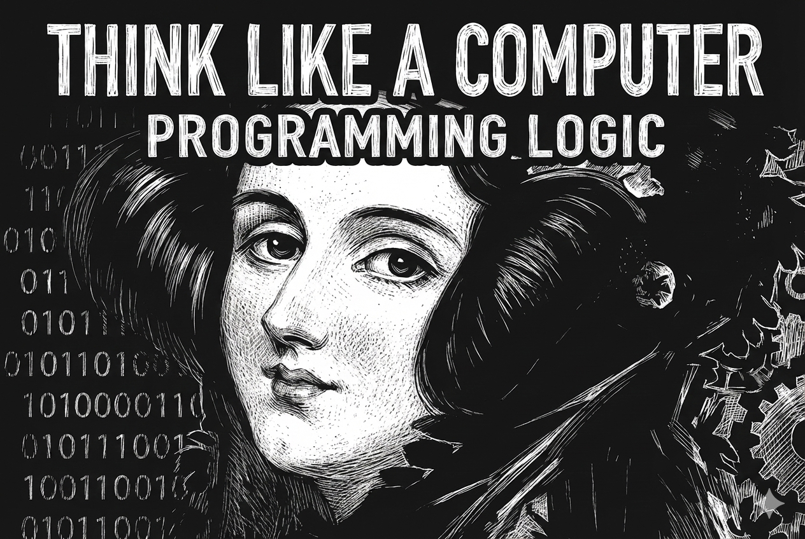
ဂါရဝပြုပါရေ
စာအုပ်အကြောင်း
အေစာအုပ်က ကွန်ပျူတာ ပရိုဂရမ်းမင်းကို အခြီခံကစလို့ လေ့လာချင်ရေ လူတိအဖို့ ရွီးသားထားစွာ ဖြစ်ပါရေ။ ကွန်ပျူတာတစ်လုံးပိုင် ဇာပိုင်တွီးခေါ်ဖို့လဲ၊ အချက်အလက်တိကို ဇာပိုင် စနစ်တကျ သိမ်းဆည်းဖို့လဲဆိုစွာတိကို သင်ကြားပီးလားပါဖို့။ ဘာသာစကားတစ်ခုကို အလွတ်ကျက်မှတ်နီဖို့အစား Logic နန့် Theory သဘောတရားတိကို ဦးစားပီး တင်ပြထားပါရေ။
အသူရို့ ဖတ်သင့်လဲ?
- ကွန်ပျူတာ ပရိုဂရမ်းမင်းကို စိတ်ဝင်စားရေ လူငယ်တိ။
- Computer Science (CS) ဘာသာရပ်ကို စလေ့လာနီရေ ကျောင်းသား/သူ တိ။
- Logic နန့် Algorithm ကို သေချာ နားလည်ချင်သူတိ။
ရရှိနိုင်ဖို့ အကျိုးကျေးဇူးတိ
- အခြီခံခိုင်မာခြင်း: Programming ဘာသာစကားတစ်ခုကို စလေ့လာရေအချိန်မှာ အခက်အခဲမဟိဘဲ သဘောတရားကိုအယင် နားလည်လာနိုင်ပါဖို့။
- တွေးခေါ်ပုံပြောင်းလဲခြင်း: ပြဿနာတစ်ခုကို ကွန်ပျူတာတစ်လုံးပိုင် စနစ်တကျ ခွဲခြမ်းစိတ်ဖြာပြီး ဖြေရှင်းတတ်လာပါဖို့ (Computational Thinking)။
- လက်တွိ့အသုံးချနိုင်ခြင်း: သီအိုရီသက်သက်မဟုတ်ဘဲ လက်တွိ့လုပ်ငန်းခွင်မှာသုံးရေ ATM, Social Media စနစ်တိကိုပါ ကိုယ်တိုင် အခြီနိန်ပေါ်မူတည်ပနာ စဉ်းစားတည်ဆောက်တတ်လာပါဖို့။
လေ့လာဖို့ လမ်းညွှန်ချက်
- အစိုင်လိုက်လေ့လာပါ: Pre-Programming ကနိန်စလို့ Data Structures ၊ Algorithms ၊ OOP ၊ ပြီးခါမှ System Design ကို လေ့လာပါ။
- လေ့ကျင့်ခန်းတိ လုပ်ပါ: သင်ခန်းစာ တစ်ခုပြီးတိုင်း ကိုယ်တိုင် စိုင်းစားပနာ လေ့ကျင့်ခန်းတိကို ဖြေဆိုပါ။
- ပြန်လည်သုံးသပ်ပါ: နားမလည်စွာဟိက ရှေ့သင်ခန်းစာတိကို ပြန်ဖတ်ပနာ သဘောတရားကို သေချာအောင် လုပ်ပါ။
သင်ခန်းစာတိကို ရွီးချယ်ပါ။
စာအုပ်အချက်
Pre-Programming
ကွန်ပျူတာဆိုစွာ ဇာလဲ?
Data Structures
အချက်အလက်တိ သိမ်းဆည်းပုံ
Algorithms
ပြဿနာဖြေရှင်းခြင်းနန့် အမှားရှာခြင်း
Object Oriented Programming
Class, Object နန့် OOP သဘောတရားတိ
Applied System Design
OOP, Data Structure, Algorithm တို့ကို ပေါင်းစပ်ပြီး လက်တွိ့ဘဝ စနစ်တိ (ATM, Library, Social Feed) တည်ဆောက်ပုံကို လေ့လာပါမည်။
License
This book is distributed under the Creative Commons Attribution-ShareAlike 4.0 International License (CC BY-SA 4.0).
You are free to:
- Share — copy and redistribute the material in any medium or format
- Adapt — remix, transform, and build upon the material
Under the following terms:
- Attribution — You must give appropriate credit to the original author.
- ShareAlike — If you remix, transform, or build upon the material, you must distribute your contributions under the same license as the original.
Pre-Programming Course:
A Gentle Introduction to Programming
ကျော်ထွန်းလင်း v0.2
၁။ နိဒါန်း (Introduction)
- ကွန်ပျူတာဆိုစွာ ဇာလဲ? (What is a Computer?)
- ဟာ့ဒ်ဝဲလ် (Hardware) နန့် ဆော့ဖ်ဝဲလ် (Software) အခြေခံ
- ပရိုဂရမ်းမင်းဆိုစွာ ဇာလဲ? (What is Programming?)
- လူနန့် ကွန်ပျူတာ ဆက်သွယ်ပုံ (Human-Computer Interaction)
- ပရိုဂရမ်းမင်း ဘာသာစကားတိ (Programming Languages Overview)
- ဇာဖြစ်လို့ သင်ယူသင့်လဲ? (Why Learn Programming?)
- ပြဿနာဖြေရှင်းနိုင်စွမ်း (Problem Solving Skills)
- Career Opportunities
၁။ Computer Science Basics (ကွန်ပျူတာသိပ္ပံ အခြီခံ)
- Hardware: ကွန်ပျူတာ အစိတ်အပိုင်းတိအကြောင်း
- Networking: အင်တာနက်နန့် ချိတ်ဆက်မှုတိအကြောင်း
- AI (Artificial Intelligence): စက်ရုပ်နန့် ဉာဏ်ရည်တုအကြောင်း
- Programming: ကွန်ပျူတာကို ခိုင်းစီဖို့ ကုဒ်ရွီးခြင်း
၂။ Logic & Algorithms (ယုတ္တိဗေဒနန့် လုပ်ထုံးလုပ်နည်းတိ)
- Thinking Like a Computer (ကွန်ပျူတာတစ်လုံးပိုင် တွေးခေါ်ခြင်း)
- Decomposition (ပြဿနာကို ခွဲခြမ်းစိတ်ဖြာခြင်း)
- Pattern Recognition (ပုံစံတူ ရှာဖွေခြင်း)
- Algorithms ဆိုစွာ ဇာလဲ? (What is an Algorithm?)
- နိစဉ်ဘဝ ဥပမာတိ (Breakfast ပြင်ဆင်ခြင်း၊ လမ်းလျှောက်ခြင်း)
- Flowcharts & Pseudocode
- Flowchart ဆွဲနည်း အခြေခံ (Symbols and Usage)
- Pseudocode ရေးသားနည်း
- Logic Gates အခြီခံ (Optional)
- AND, OR, NOT gates ရှင်းလင်းချက်
၃။ Data Representation (အချက်အလက်တိ သိမ်းဆည်းပုံ)
- Binary System (သုည နန့် တစ်)
- Decimal vs Binary
- Data Sizes (Bit, Byte, KB, MB, GB)
- စာလုံးတိ သိမ်းဆည်းပုံ (ASCII, Unicode)
- Variables & Data Types (ကိန်းရှင်တိနန့် အချက်အလက်အမျိုးအစားတိ)
- Numbers (Integers, Floats)
- Text (Strings)
- Booleans (True/False)
၄။ Control Structures (ထိန်းချုပ်မှု တည်ဆောက်ပုံတိ)
- Sequence (အစဉ်လိုက် လုပ်ဆောင်ခြင်း)
- Selection / Conditionals (ရွီးချယ်လုပ်ဆောင်ခြင်း)
- If, Else If, Else statements
- နှိုင်းယှဉ်မှုတိ (Greater than, Less than, Equal to)
- Iteration / Loops (ထပ်ခါထပ်ခါ လုပ်ဆောင်ခြင်း)
- For Loops
- While Loops
- Infinite Loops ဆိုစွာ ဇာလဲ?
၅။ Problem Solving & Debugging (ပြဿနာဖြေရှင်းခြင်းနန့် အမှားရှာခြင်း)
- ပြဿနာတစ်ခုကို ဇာပိုင် ချဉ်းကပ်ဖို့လဲ?
- Input, Process, Output (IPO Model)
- အမှားရှာခြင်း (Debugging)
- Syntax Errors vs Semantic Errors
- အမှားရှာရာမှာ သုံးဖို့ နည်းလမ်းတိ (Print debugging, structured walkthroughs)
၆။ နိဂုံးနန့် ရှေ့ဆက်ရန် (Conclusion & Next Steps)
- ဇာဘာသာစကားကို စလေ့လာသင့်လဲ? (Choosing your first language)
- Python? JavaScript? Java? C++?
- Programming Ethics (ကျင့်ဝတ်တိ)
- Do No Harm, Privacy, Honesty
- ဆက်လက်လေ့လာဖို့ အရင်းအမြစ်တိ
Chapter 0: Introduction (နိဒါန်း)
ဂါရဝပါ။ "Pre-Programming Course" ကနိန် ကြိုဆိုပါရေ။ ကွန်ပျူတာပရိုဂရမ်းမင်းကို လေ့လာချင်ပနာ ဇာကစရဖို့လဲ မသိဖြစ်နီလူတိ၊ အခြေခံ သဘောတရားတိကို သေချာ နားလည်ချင်လူတိအတွက် ရည်ရွယ်ပါရေ။
ကျောင်းမှာ၊ လုပ်ငန်းခွင်မှာ ကွန်ပျူတာကို နိတိုင်း သုံးနီကေလေ့၊ ယင်းက ကွန်ပျူတာက ဇာပိုင် အလုပ်လုပ်လဲဆိုစွာကို သတိမထားမိတတ်ကတ်ပါ။ ဒေအခန်းမှာ ကွန်ပျူတာနန့် ပတ်သက်တေ အခြီခံအကျဆုံး အချက်တိကို မိတ်ဆက်ပီးလားပါဖို့။
၂။ ကွန်ပျူတာဆိုစွာ ဇာလဲ? (What is a Computer?)
ရှင်းရှင်းပြောရဖို့ဆိုကေ ကွန်ပျူတာဆိုစွာ အချက်အလက်တိ (Data) ကို လက်ခံယူရေ၊ တွက်ချက်ခွဲခြမ်းစိတ်ဖြာရေ (Process)၊ ပြီးကေ ရလဒ် (Output) ကို ပြန်ထုတ်ပီးရေ စက်ပစ္စည်း ဖြစ်ပါရေ။
ကွန်ပျူတာစနစ်တစ်ခုမှာ အဓိက အပိုင်း (၂) ပိုင်း ပါဝင်ပါရေ -
- Hardware (ဟာ့ဒ်ဝဲလ်): ကိုင်တွယ်ထိတွိလို့ရတဲ့ အပိုင်းတိ ဖြစ်ပါရေ။ (ဥပမာ - Keyboard၊ Mouse၊ Screen၊ CPU၊ Hard Disk)။ ဒေဒါကို လူတစ်ယောက်ရဲ့ "ခန္ဓာကိုယ်" နန့် တူရေလို့ မြင်ယောင်ကြည့်နိုင်ပါရေ။
- Software (ဆော့ဖ်ဝဲလ်): ကိုင်တွယ်လို့မရရေ ညွှန်ကြားချက်တိ ဖြစ်ပါရေ။ (ဥပမာ - Windows၊ Phone Apps၊ Games)။ လူတစ်ယောက်ရဲ့ "စိတ် သို့မဟုတ် အတွေးအခေါ်" နန့် တူပါရေ။
ခန္ဓာကိုယ် (Hardware) ဇာလောက်သန်မာသန်မာ၊ စိတ် (Software) မရှိကေ ဇာမှလုပ်လို့မရပါ။ Software တိကို ဖန်တီးပီးစွာကတော့ Programming ပဲ ဖြစ်ပါရေ။
၂။ ပရိုဂရမ်းမင်းဆိုစွာ ဇာလဲ? (What is Programming?)
Programming ဆိုစွာ ကွန်ပျူတာကို အလုပ်ခိုင်းခြင်း (Giving Instructions) ပါ။
ကွန်ပျူတာတိက အလိုလျောက် သိတတ်နားလည်ရေ အသိဉာဏ် မရှိပါ။ သူရို့ကို ဇာလုပ်ရဖို့လဲ ဆိုစွာ တိတိကျကျ ခိုင်းစေရပါရေ။ လူအချင်းချင်း စကားပြောရေပိုင် ပြောလို့မရပါ။ ကွန်ပျူတာ နားလည်တဲ့ ဘာသာစကား (Language) နန့် ပြောရပါရေ။
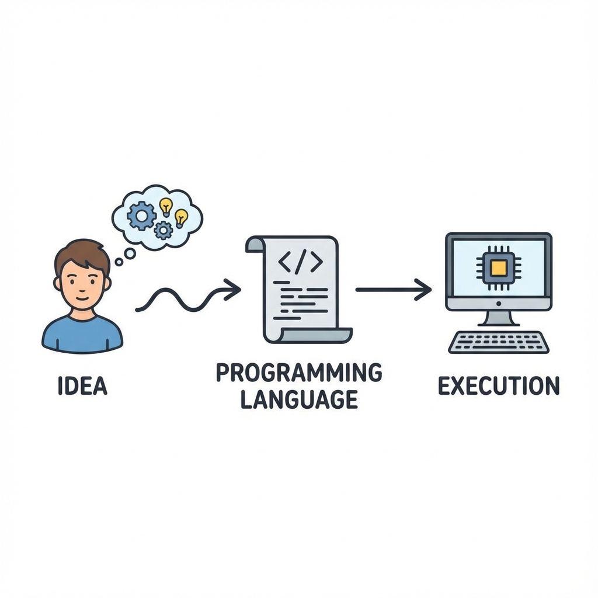
ဥပမာ - နိုင်ငံခြားသား တစ်ယောက်ကို လမ်းညွှန်ချင်ရေ ဆိုပါဖိ။ သူနားလည်တဲ့ ဘာသာစကား (ဥပမာ - အင်္ဂလိပ်စကား) နန့် ပြောမှရဖို့။ အေပိုင်ပါယာ၊ ကွန်ပျူတာနန့် ဆက်သွယ်ဖို့ Python, JavaScript, C++ စရေ Programming Languages တိကို သုံးရပါရေ။
၃။ ဇာဖြစ်လို့ သင်ယူသင့်လဲ? (Why Learn Programming?)
Software Developer တစ်ယောက် ဖြစ်ဖို့အတွက်ပဲ သင်ယူရစွာ မဟုတ်ပါ။
- Logic & Problem Solving: ပြဿနာတိကို စနစ်တကျ တွေးခေါ် ဖြေရှင်းတတ်လာဖို့။
- Automation: ပျင်းဖို့ကောင်းပနာ ထပ်ခါထပ်ခါ လုပ်နီရရေ အလုပ်တိကို ကွန်ပျူတာနန့် အစားထိုး ခိုင်းစီနိုင်ဖို့။
- Creation: ကိုယ်ပိုင် Website၊ App သို့မဟုတ် Game တိကို ဖန်တီးနိုင်ပါဖို့။
- Career Opportunities: နည်းပညာခေတ်မှာ အလုပ်အကိုင် အခွင့်အလမ်းတိ အများကြီး ရှိပါရေ။
သင်ခန်းစာ အကျဉ်းချုပ်
- Computer: အချက်အလက် (Input) ကို ယူပြီး၊ တွက်ချက် (Process) ပနာ၊ ရလဒ် (Output) ထုတ်ပီးရေ စက်။
- Hardware & Software: ခန္ဓာကိုယ်နန့် စိတ် ပမာ တူညီပါရေ။
- Programming: ကွန်ပျူတာကို တိကျရေ ညွှန်ကြားချက်တိ ပီးခြင်း။
လေ့ကျင့်ခန်း (Exercise):
- Goal Setting: မိတ်ဆွေ ဇာကြောင့် Programming သင်ချင်တာလဲ? သင်ပြီးရင် ဇာလုပ်ချင်လဲ? (ဥပမာ - Website ရွီးချင်လို့) စာအုပ်ထဲမှာ ချရေးပါ။
- Hardware Hunt: ပတ်ဝန်းကျင်မှာ Software နန့် မောင်းနှင်နီရေ ပစ္စည်း ၃ ခုကို ရှာဖွေပြီး စာရင်းပြုစုပါ။ (ဥပမာ - စမတ်ဖုန်း၊ TV remote၊ မီးပွိုင့်)။
Chapter 1: Computer Science Basics (ကွန်ပျူတာသိပ္ပံ အခြီခံ)
Computer Science ဆိုစွာ ကွန်ပျူတာတိအကြောင်းရာ မဟုတ်ပါ။ ပြဿနာဖြေရှင်းခြင်း (Problem Solving) အကြောင်း ဖြစ်ပါရေ။ အဓိက အပိုင်းကြီး (၄) ခု ပါဝင်ပါရေ။
၁။ Hardware: ကွန်ပျူတာ အစိတ်အပိုင်းတိအကြောင်း
Hardware ဆိုစွာ ကွန်ပျူတာဧ့ ကိုင်တွယ်လို့ရရေ အစိတ်အပိုင်းတိ ဖြစ်ပါရေ။ ကွန်ပျူတာ Hardware လုပ်ဆောင်ပုံကို လူခန္ဓာကိုယ်နန့် နှိုင်းယှဉ်ကြည့်နိုင်ပါရေ။
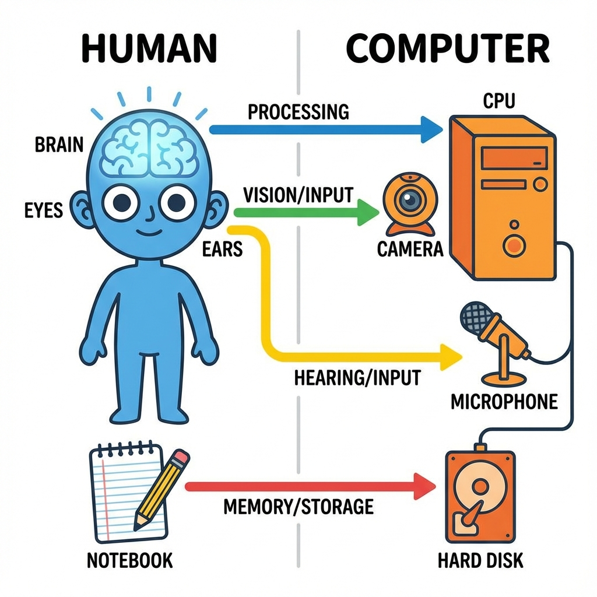
| လူခန္ဓာကိုယ် (Human) | ကွန်ပျူတာ (Computer) | လုပ်ဆောင်ချက် (Function) |
|---|---|---|
| မျက်လုံး၊ နား | Input Devices (Keyboard, Mouse, Camera) | အချက်အလက်တိကို လက်ခံယူဖို့ (See/Hear) |
| ဦးနှောက် | CPU (Central Processing Unit) | တွက်ချက်ဖို့၊ စဉ်းစားဖို့ (Think/Process) |
| စာအုပ်/မှတ်ဉာဏ် | Storage (Hard Disk / SSD) | အရာရာကို မှတ်သားထားဖို့ (Remember) |
| ပါးစပ်၊ လက် | Output Devices (Monitor, Printer, Speaker) | ရလဒ်ကို ပြောပြဖို့၊ ပြသဖို့ (Speak/Act) |
၂။ Networking: အင်တာနက်နန့် ချိတ်ဆက်မှုတိအကြောင်း
ကွန်ပျူတာတစ်လုံးတည်း အလုပ်လုပ်စွာထက်၊ ကွန်ပျူတာအချင်းချင်း ချိတ်ဆက်ပနာ အလုပ်လုပ်ကေ ပိုထိရောက်ပါရေ။
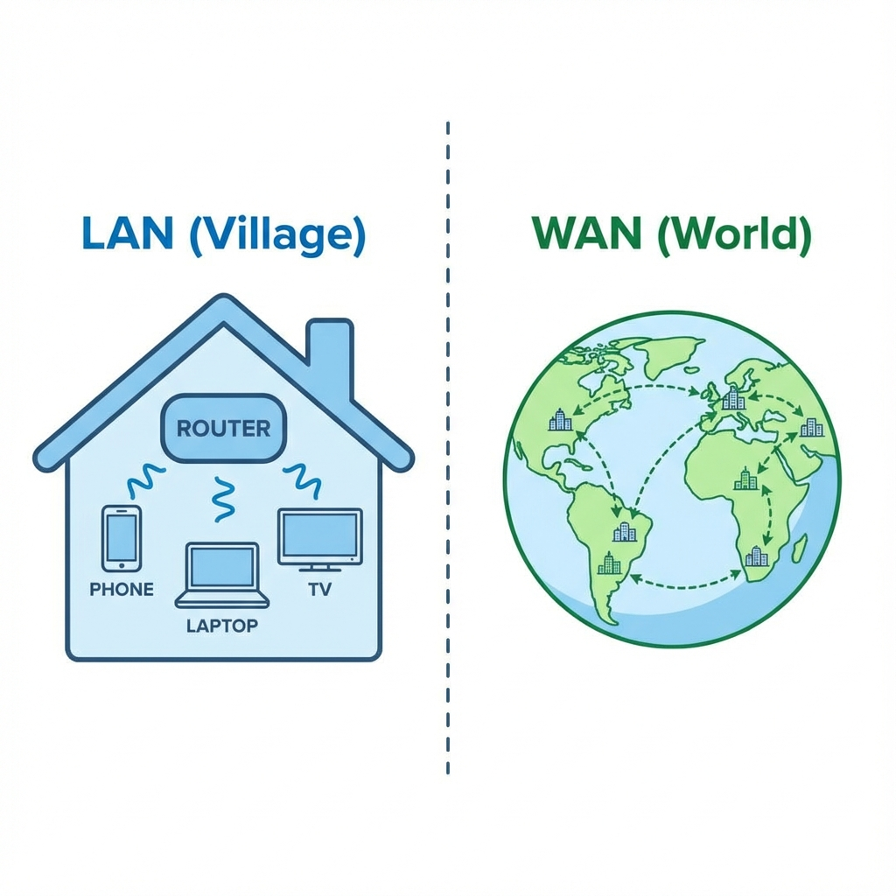
-
LAN (Local Area Network): "ရွာကလေး" တစ်ရွာနန့် တူပါရေ။ အိမ်တစ်အိမ် (သို့) ရုံးခန်းတစ်ခု အနားမှာရှိရေ ကွန်ပျူတာတိ အချင်းချင်း ချိတ်ဆက်ထားစွာပါ။ (ဥပမာ - ရုံးမှာ Printer မျှဝေသုံးစွဲခြင်း)
-
WAN (Wide Area Network): "ကမ္ဘာကြီး" နန့် တူပါရေ။ တစ်ကမ္ဘာလုံးက မြို့တိ၊ နိုင်ငံတိကို ချိတ်ဆက်ထားစွာပါ။ (ဥပမာ - Internet)
-
Client-Server Concept: စားသောက်ဆိုင် ဥပမာပိုင်ပါ။
- Client (Customer): မှာယူလူ (ဖုန်း/ကွန်ပျူတာ)
- Server (Chef): ချက်ပြုတ်ပီးလူ (Websites, Apps သိမ်းထားရာ နေရာ)
၃။ AI (Artificial Intelligence): စက်ရုပ်နန့် ဉာဏ်ရည်တုအကြောင်း
AI ဆိုစွာ ကွန်ပျူတာတိကို လူသားတိပိုင် တွေးခေါ်တတ်အောင် သင်ကြားပီးတဲ့ နည်းပညာ ဖြစ်ပါရေ။ ဇာပိုင် သင်ကြားပီးလဲ ဆိုစွာကို အောက်ပါပုံမှာ လေ့လာကြည့်ပါနန့်။
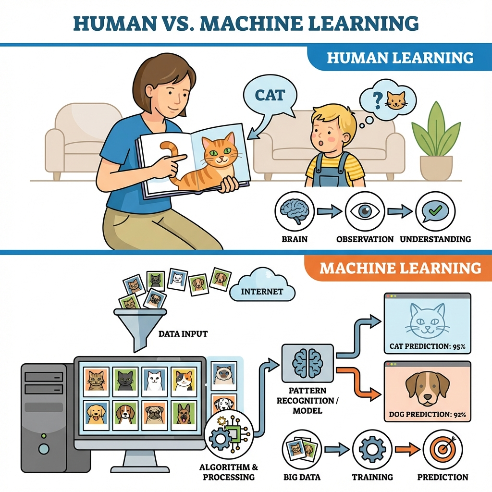
လူနန့် AI သင်ယူပုံ နှိုင်းယှဉ်ချက်
-
Human Learning (လူသားများ သင်ယူခြင်း):
- အချေတစ်ယောက်ကို မိဘက "ဒါက ခွေးလေး"၊ "ဒါက ကြောင်လေး" လို့ ရုပ်ပုံကဒ်တိ ပြပြီး သင်ပီးရပါရေ။ အချေက အကြိမ်ကြိမ် ကြည့်ပြီး မှတ်သားပါရေ။
-
Machine Learning (စက်တိကို သင်ယူခြင်း):
- Step 1 (Data Input): ကွန်ပျူတာကို ခွီးပုံပေါင်း (၁၀၀၀)၊ ကြောင်ပုံပေါင်း (၁၀၀၀) ထည့်သွင်းပီးရပါရေ။
- Step 2 (Training): ကွန်ပျူတာက ယင်းပုံတိရဲ့ ကွာခြားချက် (ဥပမာ - နားရွက်ပုံစံ၊ နှာဖူးပုံစံ) ကို သူ့အလိုလို ရှာဖွေ လေ့လာပါရေ။
- Step 3 (Prediction): လေ့လာပြီးလားရေအခါ၊ ပုံသစ်တစ်ပုံ ပြလိုက်ကေ "အေစာ ခွီးပါ" လို့ တိတိကျကျ ဖြေနိုင်လာပါရေ။
- Applications: ဖုန်းထဲက Face ID (မျက်နှာကို မှတ်မိစွာ)၊ Google Translate (ဘာသာပြန်စွာ)၊ Driverless Cars (မောင်းသူမဲ့ ကားတိ)။
၄။ Programming: ကွန်ပျူတာကို ခိုင်းစီဖို့ ကုဒ်ရွီးခြင်း
အထက်ပါ Hardware, Network, AI တိ အားလုံး အလုပ်လုပ်ဖို့အတွက် ညွှန်ကြားချက်တိ လိုပါရေ။ ယင်းညွှန်ကြားချက်တိကို ရွီးသားခြင်းကို Programming လို့ ခေါ်ပါရေ။
Hardware vs Software (နှိုင်းယှဉ်ချက်)
| Feature | Hardware (ဟာ့ဒ်ဝဲလ်) | Software (ဆော့ဖ်ဝဲလ်) |
|---|---|---|
| Definition | ထိတွေ့ကိုင်တွယ်၍ရသော အစိတ်အပိုင်းများ | ကွန်ပျူတာကို ခိုင်းစီရေညွှန်ကြားချက်တိ |
| Example | Monitor, Keyboard, CPU | Windows, Browser, Games |
| Nature | ပျက်စီးယိုယွင်းနိုင်သည် (Wear out) | ဟောင်းမလားပါ၊ Update လုပ်၍ရသည် |
| Type | Physical (ရုပ်ပိုင်းဆိုင်ရာ) | Logical (ယုတ္တိပိုင်းဆိုင်ရာ) |
- Low-level Language: စက်နန့် နီးစပ်တဲ့ ဘာသာစကား (ဥပမာ - 0s and 1s, Assembly)။ ရွီးရခက်ပါရေ။
- High-level Language: လူနားလည်လွယ်တဲ့ ဘာသာစကား (ဥပမာ - Python, JavaScript,Java)။ ကျွန်တော်တို့ လေ့လာဖို့က ဒေ High-level languages တိ ဖြစ်ပါရေ။
သင်ခန်းစာ အကျဉ်းချုပ်
- Components: Input, Output, CPU, Storage (မှတ်ဉာဏ်)။
- Network: LAN (ရွာ) နန့် WAN (ကမ္ဘာ)။
- AI: ကွန်ပျူတာကို လူပိုင် သင်ယူခိုင်းခြင်း (Machine Learning)။
လေ့ကျင့်ခန်း (Exercise): Hardware Hunt - သင့်ပတ်ဝန်းကျင် (အခန်းထဲ) ကို ကြည့်ပြီး အောက်ပါတို့ကို ရှာဖွေပါ။
- Input Device ၂ ခု (ဥပမာ - Phone Touchscreen, ...)
- Output Device ၂ ခု (ဥပမာ - Earbuds, ...)
Computer Science ဟာ ပင်လယ်ပြင်ကြီးပိုင် ကျယ်ပါရေ။ အခုဖော်ပြခစွာကတော့ ငပလီကမ်းခြေက သဲပွင့်ချေတိလောက်ရာ ရှိပါသိရေ။
Chapter 2: Logic & Algorithms (ယုတ္တိဗေဒနန့် လုပ်ထုံးလုပ်နည်းတိ)
ကွန်ပျူတာတစ်လုံးပိုင် ဇာပိုင် စဉ်းစားလဲဆိုစွာကို လေ့လာလားပါဖို့။ ကုဒ် (Code) တိ စမခင်မှာ အရေးအကြီးဆုံးက "အတွေးအခေါ်" (Thinking) ပါပဲ။
၁။ Thinking Like a Computer (ကွန်ပျူတာတစ်လုံးပိုင် တွေးခေါ်ခြင်း)
ကွန်ပျူတာတိက လူတိပိုင် ပါးနပ်မှု မရှိပါ။ သူရို့က ခိုင်းစွာကို တိတိကျကျ လုပ်တေ စက်တိပါ။ ယင်းကြောင့် ကျွန်တော်ရို့က ပြဿနာတစ်ခုကို ဖြေရှင်းချင်ကေ ကွန်ပျူတာ နားလည်အောင် အဆင့်ဆင့် ခွဲခြမ်းစိတ်ဖြာပနာ ပြောပြဖို့ လိုပါရေ။ Computational Thinking လို့ ခေါ်ပါရေ။
အေမှာ အဓိက သဘောတရား နှစ်ခု ရှိပါရေ -
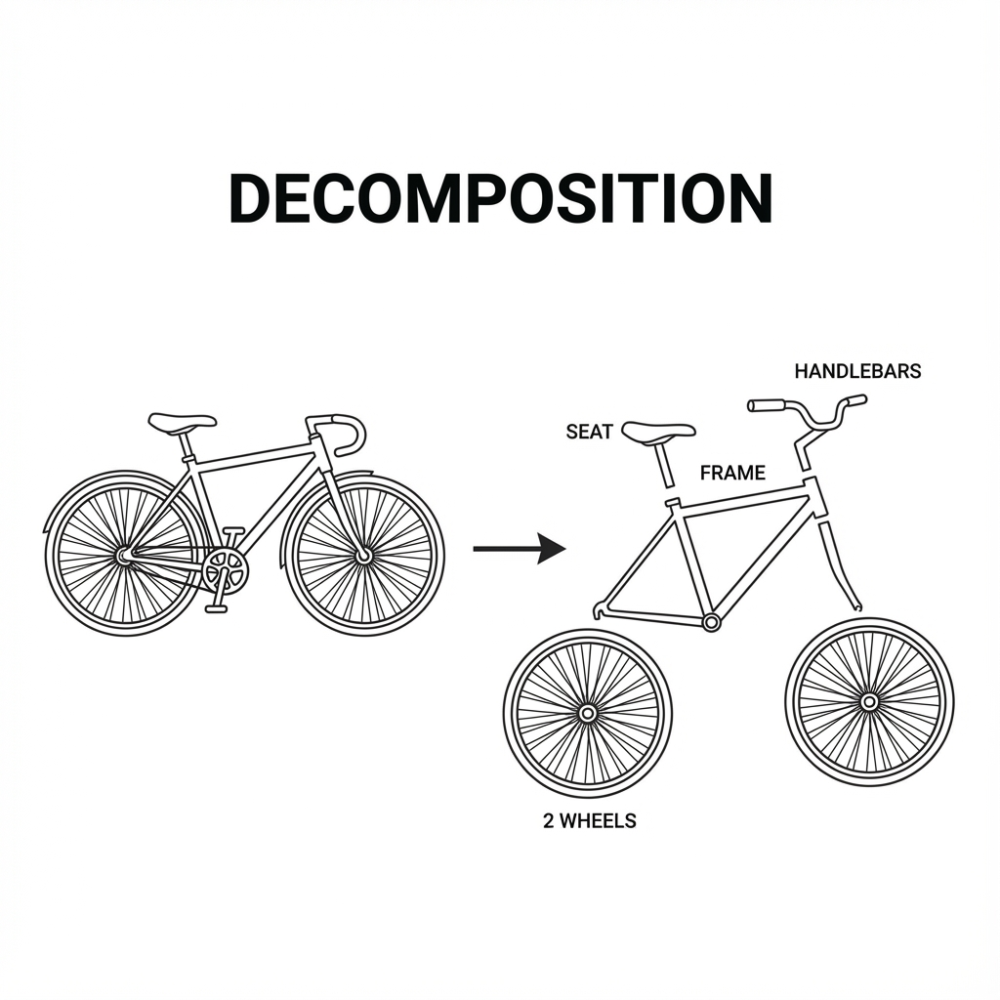
This diagram shows how a complex object (a bicycle) is broken down into smaller, manageable parts.
- Decomposition (ပြဿနာကို ခွဲခြမ်းစိတ်ဖြာခြင်း): ကြီးမားရှုပ်ထွီးရေ ပြဿနာကြီးကို ငယ်အောင်လုပ်ပနာ ဖြေရှင်းရလွယ်ကူရေ အပိုင်းချေတိအဖြစ် ခွဲထုတ်လိုက်စွာပါ။
- ဥပမာ - စက်သီးတစ်စီး တပ်ဆင်ဖို့ဗျာယ်ဆိုကေ ဂါရီတပ်ဖို့၊ ဟန်းကိုင်တပ်ဖို့၊ ထိုင်ခုံတပ်ဖို့ စသဖြင့် အပိုင်းလိုက် ခွဲလုပ်စွာမျိုးပေါ့။
- Pattern Recognition (ပုံစံတူ ရှာဖွေခြင်း): ပြဿနာတိထဲမှာ တူညီရေ ပုံစံတိကို ရှာဖွေပနာ အဖြေထုတ်စွာပါ။
၂။ Algorithms ဆိုစွာ ဇာလဲ? (What is an Algorithm?)
Algorithm (အယ်လဂိုရစ်သမ်) ဆိုစွာ လုပ်ငန်းဆောင်တာတစ်ခု ပြီးဆုံးဖို့အတွက် လုပ်ဆောင်ရဖို့ အဆင့်ဆင့်သော ညွှန်ကြားချက်တိ (Step-by-step instructions) ဖြစ်ပါရေ။
ဥပမာ - ခေါက်ဆွဲပြုတ်ခြင်း
- အိုးထဲ ရီထည့်ပါ။
- ရီပူဆူအောင် တည်ပါ။
- ရီဆူလာကေ ခေါက်ဆွဲထည့်ပါ။
- ၃ မိနစ်ခန့် ပြုတ်ပါ။
- အမွှီးအကြိုင် ထည့်ပါ။
- ပန်းကန်ထဲ ထည့်ပနာ စားသုံးနိုင်ဗျာ။
ယင့်စာရေ Algorithm တစ်ခုပါယာ။ အဆင့်ကျော်လို့ မရပိုင်၊ အစီအစဉ် မှားလို့လေ့ မရပါ။ Programming ဆိုစွာကလည်း အေပိုင် ညွှန်ကြားချက်တိကို ကွန်ပျူတာနားလည်ရေ ဘာသာစကားနန့် ရွီးသားခြင်း ပါဗျာယ်။
၃။ Flowcharts & Pseudocode
ကျွန်တော်တို့ရဲ့ Algorithm တိကို ပုံဖော်ဖို့အတွက် Flowchart နန့် Pseudocode ကို သုံးပါရေ။
Flowchart (စီးဆင်းမှုပုံပြကားချပ်)
Flowchart ဆိုစွာ လုပ်ဆောင်ပုံအဆင့်ဆင့်ကို ပုံတိ၊ မြှားတိနန့် ဆွဲပြစွာပါ။
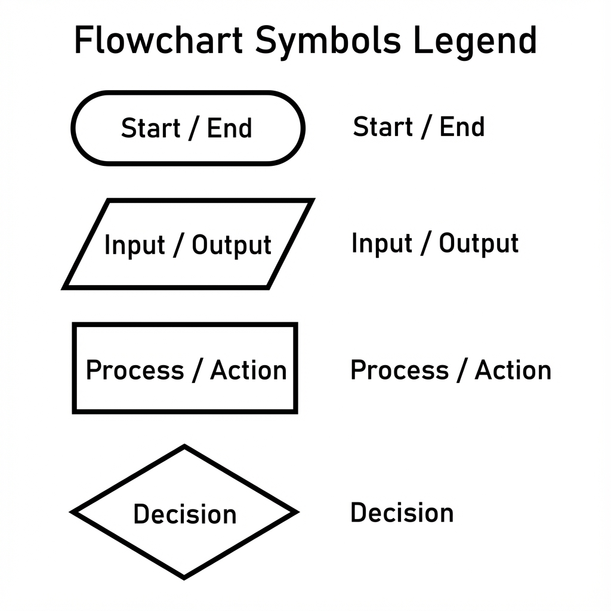
- Oval (ဘဲဥပုံ): အစ (Start) နန့် အဆုံး (End) ကို ပြသပါရေ။
- Parallelogram (စတုဂံရွဲ့): အချက်အလက် သွင်းခြင်း/ထုတ်ခြင်း (Input/Output) ကို ပြသပါရေ။
- Rectangle (စတုဂံ): လုပ်ဆောင်ချက် (Process) ကို ပြသပါရေ။
- Diamond (စိန်ပုံ): ဆုံးဖြတ်ချက် (Decision) ကို ပြသပါရေ။ (Yes/No လမ်းခွဲတိ ထွက်လာပါရေ)
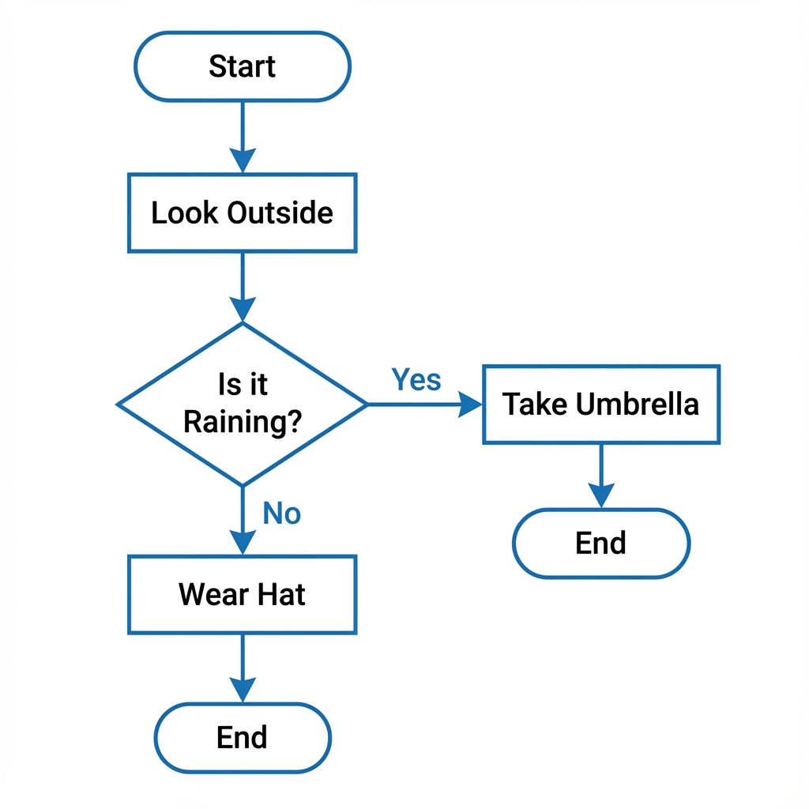
Pseudocode (ကုဒ်တု)
Pseudocode ဆိုစွာ တကယ့် programming language မဟုတ်ဘဲ လူနားလည်လွယ်ဖို့ စကားလုံးတိနန့် ရွီးသားထားရေ ကုဒ်အကြမ်းဖျင်း ဖြစ်ပါရေ။ အောက်ပါ Keywords တိကို အသုံးများပါရေ -
| Keyword | Meaning (အဓိပ္ပာယ်) | Example |
|---|---|---|
| INPUT / READ | အချက်အလက် လက်ခံခြင်း | INPUT temperature |
| OUTPUT / PRINT | ရလဒ် ပြသခြင်း | PRINT "Hello" |
| IF / ELSE | ဆုံးဖြတ်ချက်ချခြင်း | IF rain THEN take_umbrella ELSE wear_hat |
| WHILE / FOR | ထပ်ခါထပ်ခါ လုပ်ဆောင်ခြင်း | WHILE hungry DO eat |
| SET / COMPUTE | တန်ဖိုးသတ်မှတ်ခြင်း/တွက်ချက်ခြင်း | SET x = 5 |
Pseudocode Example (မိုးရွာမရွာ စစ်ဆေးခြင်း):
START
Look_Outside
IF Raining THEN
PRINT "Take Umbrella"
ELSE
PRINT "Wear Hat"
END IF
END
သင်ခန်းစာ အကျဉ်းချုပ်
- Computational Thinking: ပြဿနာကို ခွဲခြမ်းစိတ်ဖြာခြင်း (Decomposition) နန့် ပုံစံတူရှာခြင်း (Pattern Recognition)။
- Algorithm: လုပ်ဆောင်ပုံ အဆင့်ဆင့် (Step-by-step instructions)။
- Tools: Flowchart (ပုံ) နန့် Pseudocode (စာ)။
လေ့ကျင့်ခန်း (Exercise):
-
Morning Routine မိုးသားဖက် လုပ်ရိုးလုပ်စဉ် (Morning Routine) ကို Algorithm တစ်ခုအနေနန့် အဆင့်ဆင့် ချရေးကြည့်ပါ။ (သွားတိုက်စွာ၊ မျက်နှာသစ်စွာ စသဖြင့် အသေးစိတ် ရွီးကြည့်ပါ)။
-
"သွားတိုက်ခြင်း" လုပ်ငန်းစဉ်ကို Algorithm ရွီးကြည့်ပါ။
-
Flowcharting a Sandwich: ပေါင်မုန့်မီးကင် (Toast) လုပ်စားပုံကို (Flowchart ဆွဲကြည့်ပါ။ Decision ထည့်ပါ၊ ဥပမာ - ထောပတ်သုတ်မလား? Yes/No)
Chapter 3: Data Representation (အချက်အလက်တိ သိမ်းဆည်းပုံ)
ကွန်ပျူတာတိက ကျွန်တော်တို့ မြင်နီရတဲ့ စာတိ၊ ပုံတိ၊ ဗီဒီယိုတိကို အေအတိုင်း မသိမ်းဆည်းပါ။ သူရို့က လျှပ်စစ်ပတ်လမ်းတိနန့် တည်ဆောက်ထားစွာဖြစ်လို့ အဖွင့် (On) နန့် အပိတ် (Off) အခြေအနေ နှစ်ခုကိုပဲ နားလည်ပါရေ။
၁။ Binary System (သုည နန့် တစ်)
"အဖွင့်" နန့် "အပိတ်" ကို ဂဏန်းနန့် ကိုယ်စားပြုကေ 1 (On) နန့် 0 (Off) ဖြစ်ပါရေ။ Binary System (ဒွိစုံသင်္ချာ) လို့ ခေါ်ပါရေ။
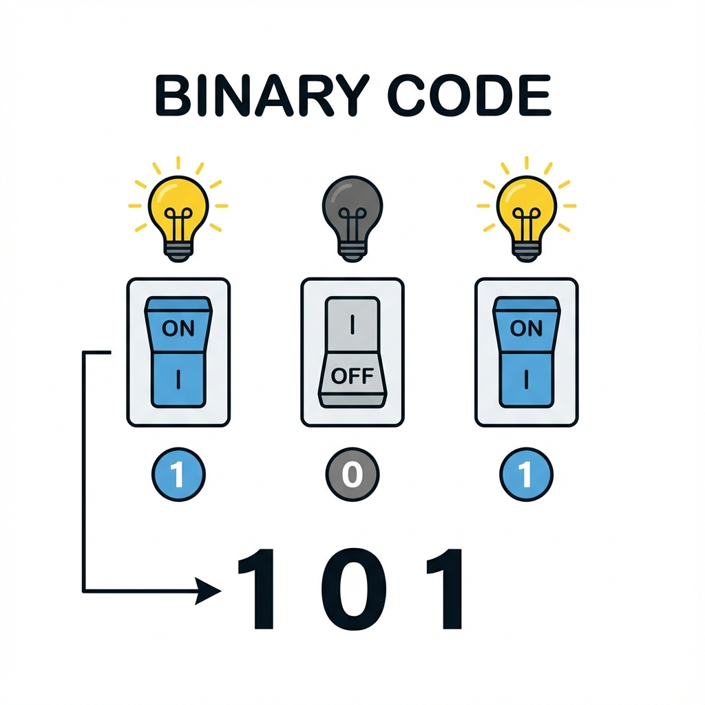
ကွန်ပျူတာထဲမှာ ရှိသမျှ အရာအားလုံး - ရိုက်လိုက်တေ စာလုံး 'A'၊ နားထောင်နီရေ တေးခင်း၊ ကြည့်နီရေ ဓာတ်ပုံ - အားလုံးကို နောက်ကွယ်မှာ 0 နန့် 1 တိ အများကြီးနန့် ဖွဲ့စည်းထားစွာပါ။
- Bit:
0သို့မဟုတ်1တစ်လုံးကို "Bit" လို့ ခေါ်ပါရေ။ - Byte: Bit (၈) လုံး စုပေါင်းထားစွာကို "Byte" လို့ ခေါ်ပါရေ။ (ဥပမာ -
01000001)
[!TIP] Brain Teaser:
01000001သည်Aဖြစ်လျှင်01000010သည် ဘာဖြစ်နိုင်မလဲ? (အဖြေ:B- Binary ဂဏန်းတိရေ တစ်ခုတိုးလားတိုင်း အက္ခရာစဉ်သည်လည်း တစ်ခုတိုးလားလေ့ဟိရေ)
Data Sizes & Units (အချက်အလက် ပမာဏ အတိုင်းအတာများ)
ကျွန်တော်ရို့ ဖုန်းတိ၊ ကွန်ပျူတာတိမှာ Storage ဇလောက်ရှိရေလဲ ဆိုစွာကို အောက်ပါ အတိုင်းအတာတိနန့် ပြောလေ့ရှိပါရေ။
| Unit | Size | Analogy (ဥပမာ တင်စားချက်) |
|---|---|---|
| Bit (b) | 0 or 1 | အက်တမ် (Atom) တစ်ခု |
| Byte (B) | 8 bits | စာလုံး (Letter) တစ်လုံး (ဥပမာ 'A') |
| Kilobyte (KB) | 1,024 Bytes | စာတစ်မျက်နှာ (A page of text) |
| Megabyte (MB) | 1,024 KB | စာအုပ်တစ်အုပ် (A book) |
| Gigabyte (GB) | 1,024 MB | စာအုပ်စင်တစ်ခု (A bookshelf) |
| Terabyte (TB) | 1,024 GB | စာကြည့်တိုက်တစ်ခု (A library) |
[!NOTE] ကွန်ပျူတာသည် 2 ၏ ထပ်ကိန်းများ (Powers of 2) ဖြင့် အလုပ်လုပ်သောကြောင့် 1,000 အစား 1,024 ဖြင့် မြှောက်လေ့ရှိပါသည်။
၂။ Variables & Data Types (ကိန်းရှင်တိနန့် အချက်အလက်အမျိုးအစားတိ)
Programming မှာ အချက်အလက်တိကို ခေတ္တသိမ်းဆည်းထားဖို့ Variables (ကိန်းရှင်တိ) ကို သုံးပါရေ။ Variable တစ်ခုကို "ပုံး" (Box) တစ်ခုလို့ မြင်ယောင်ကြည့်ပါ။
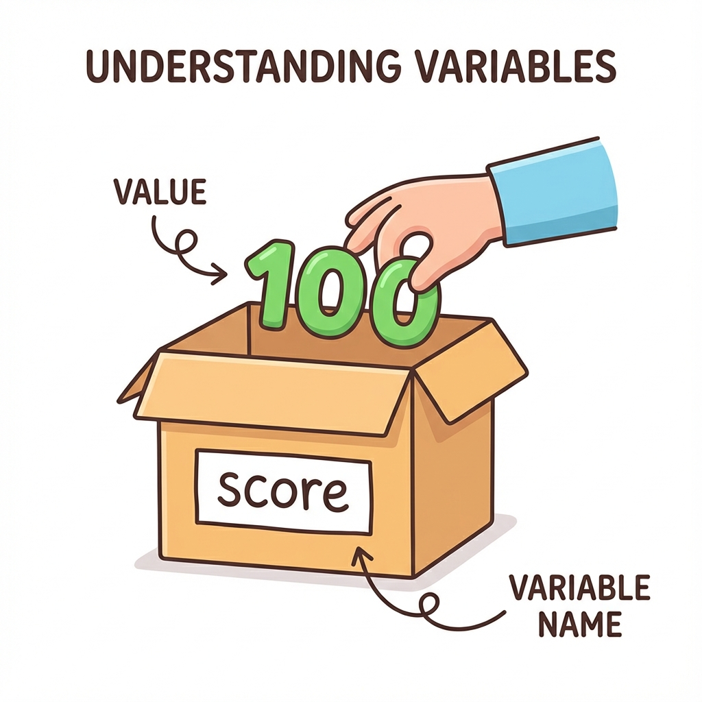
ပုံးတိုင်းမှာ နာမည်ရှိရပါဖို့ (ဥပမာ - score, username)။ အထဲမှာ တန်ဖိုး (Data) ထည့်လို့ရရေ။
Data Types (အချက်အလက် အမျိုးအစားတိ)
ပုံးထဲကို ဇာထည့်မလဲပေါ်မူတည်ပနာ အမျိုးအစား ကွဲပြားပါရေ။
1. Integer (ကိန်းပြည့်)
ဒသမ (အစက်အပျောက်) မပါရေ ကိန်းဂဏန်းတိ ဖြစ်ပါရေ။ ရေတွက်လို့ရရေ အရာတိအတွက် သုံးပါရေ။
- Example:
age = 25,count = 100,year = 2024
2. Float (ဒသမကိန်း)
ဒသမ အစက်အပျောက် ပါရေ ကိန်းဂဏန်းတိ ဖြစ်ပါရေ။ အတိအကျ တိုင်းတာမှုတိအတွက် သုံးပါရေ။
- Example:
price = 9.99,temperature = 36.5,pi = 3.14
3. String (စာသား)
စာလုံးတိကို စုစည်းထားစွာ ဖြစ်ပါရေ။ စာသားဖြစ်ကြောင်းပြဖို့ " (Quotes) သုံးရပါရေ။
- Example:
name = "Mg Mg",message = "Hello World",phone = "09123456"("09..." သည် တွက်ချက်စရာမလိုသောကြောင့် String အဖြစ်ထားလေ့ရှိသည်)
4. Char (စာလုံး)
စာလုံး တစ်လုံးတည်းကိုရာ ကိုယ်စားပြုပါရေ။
- Example:
grade = 'A',gender = 'M'
5. Boolean (အမှား/အမှန်)
True (မှန်) သို့မဟုတ် False (မှား) နှစ်မျိုးသာ ရှိပါရေ။ ဆုံးဖြတ်ချက်ချဖို့အတွက် သုံးပါရေ။
- Example:
is_raining = True,has_passed = False
Why do Data Types Matter? (အချက်အလက် အမျိုးအစားတိ ဇာဖြစ်လို့ အရေးကြီးလဲ?)
ကွန်ပျူတာက Data Type ပေါ်မူတည်ပနာ အလုပ်လုပ်ပုံ ကွဲပြားလို့ပါ။
- Numbers:
1 + 1လို့ ရေးရင် ကွန်ပျူတာက 2 လို့ ပေါင်းပြပါဖို့။ - Strings:
"1" + "1"လို့ ရေးရင် ကွန်ပျူတာက စာသားနှစ်ခု ဆက်ပနာ "11" လို့ ပြပါဖို့။
ကိုယ်လိုချင်တဲ့ ရလဒ်ရဖို့ Data Type မှန်ကန်စွာ သုံးဖို့ လိုပါရေ။
သင်ခန်းစာ အကျဉ်းချုပ်
- Binary: 0 နန့် 1 ကိုသာ ကွန်ပျူတာ နားလည်ပါရေ။
- Variables: Data သိမ်းရေ ပုံးတိ။
- Data Types: Integer (ကိန်းပြည့်)၊ String (စာသား)၊ Boolean (အမှား/အမှန်)။
လေ့ကျင့်ခန်း (Exercise):
- My Age in Binary - သင့်အသက်ကို Binary ပြောင်းကြည့်ပါ။
- အဆင့် (၁): အသက်ကို ချရေးပါ (ဥပမာ - 20)။
- အဆင့် (၂): 128, 64, 32, 16, 8, 4, 2, 1 တန်ဖိုးများကို သုံးပြီး ပေါင်းစပ်ကြည့်ပါ။
(Hint: 20 = 16 + 4, So binary is
00010100)
- မိတ်ဆွေရဲ့ နာမည်၊ အသက် နန့် အရပ်အမောင်းကို Variable တိအဖြစ် ဖန်တီးကြည့်ပါ။ ဇာ Data Type ကို သုံးမလဲ စိုင်းစားပါ။
(ဥပမာ -
name = "Mg Mg"(String))
Chapter 4: Control Structures (ထိန်းချုပ်မှု တည်ဆောက်ပုံတိ)
ပရိုဂရမ်တစ်ခုစာ အထက်ကနီ အောက်ကို တစ်ကြောင်းချင်းစီ ပုံမှန် အလုပ်လုပ်ပါရေ။ ယကေလေ့ တစ်ခါတလေမှာ ကျွန်တော်တို့က အချို့အလုပ်တိကို ကျော်ခိုင်းချင်စွာ (သို့မဟုတ်) ထပ်ခါထပ်ခါ လုပ်ခိုင်းချင်စွာမျိုး ရှိပါရေ။ ယင့်စာကို Control Structures နန့် လုပ်ဆောင်နိုင်ပါရေ။
၁။ Sequence (အစဉ်လိုက် လုပ်ဆောင်ခြင်း)
ပုံမှန် အလုပ်လုပ်ပုံပါ။ ညွှန်ကြားချက်တိကို အထက်ဆုံးစာကြောင်းကနီ အောက်ဆုံးထိ တစ်ဆင့်ချင်းစီ လုပ်လားစွာ ဖြစ်ပါရေ။ အဆင့်ကျော်လို့ မရပါ။
START
Wake Up
Brush Teeth
Eat Breakfast
END
၂။ Selection (ရွီးချယ်လုပ်ဆောင်ခြင်း)
အခြေအနိန်တစ်ခုပေါ် မူတည်ပနာ ဇာဆက်လုပ်ရဖို့လဲ ဆုံးဖြတ်စွာပါ။ If, Else statements တိကို သုံးပါရေ။
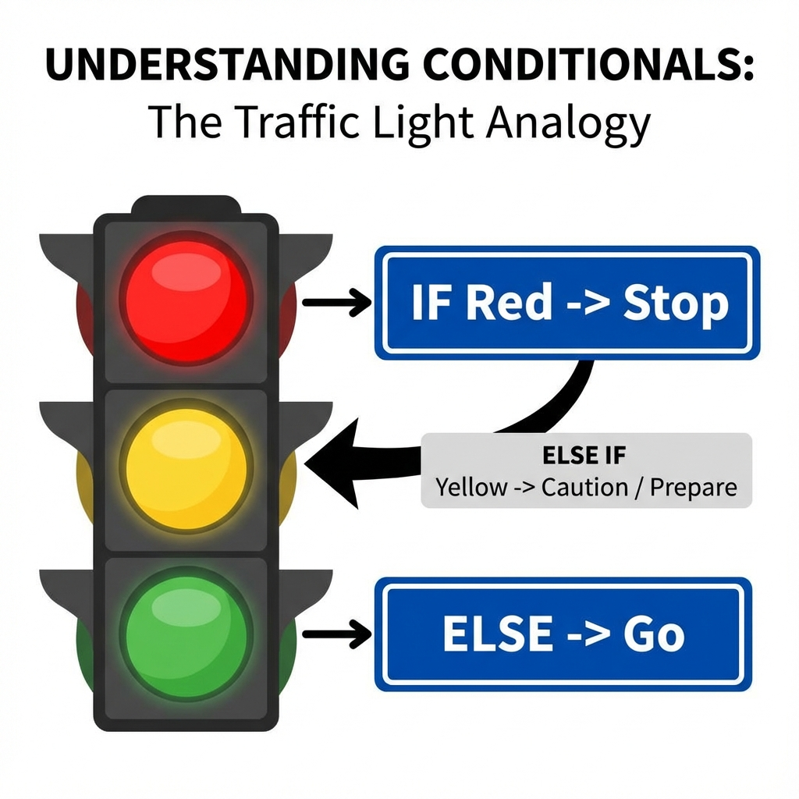
Example: စာမေးပွဲ အောင်/ရှုံး (Pass or Fail)
အောက်ပါ Flowchart မှာ အမှတ် ၅၀ ကျော်ကေ "Pass"၊ မကျော်ကေ "Fail" လို့ ပြသပုံကို တွက်ချက်ပြထားပါရေ။
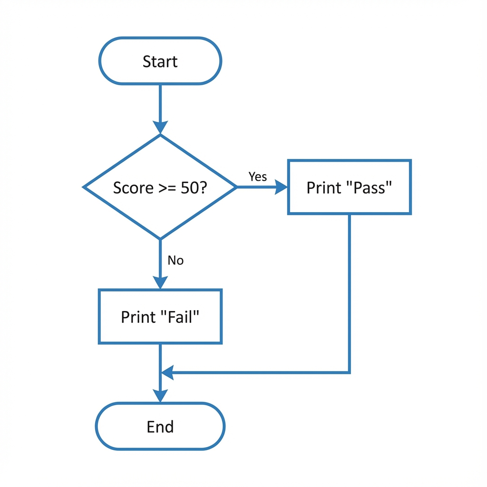
IF Score >= 50 THEN
PRINT "Pass"
ELSE
PRINT "Fail"
END IF
၃။ Iteration (ထပ်ခါထပ်ခါ လုပ်ဆောင်ခြင်း)
အေစာကို Loop ပတ်ရေလို့ ခေါ်ပါရေ။ အလုပ်တစ်ခုကို အကြိမ်အရေအတွက် တစ်ခုအထိ (သို့မဟုတ်) အခြေအနေတစ်ခု ပြည့်လားတဲ့အထိ ထပ်ခါထပ်ခါ လုပ်ခိုင်းစွာပါ။
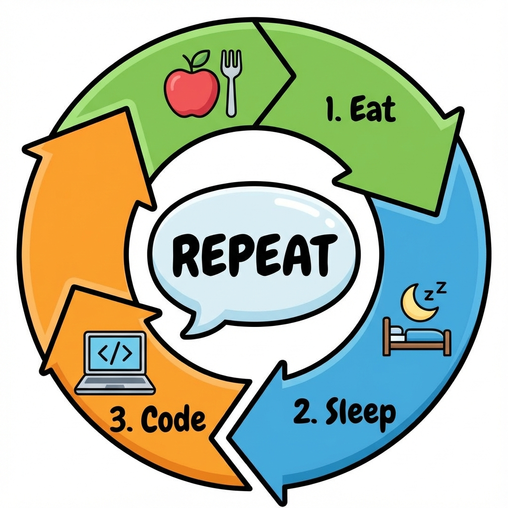
3.1 Loop အမျိုးအစားတိ
A. For Loop (အကြိမ်ရေ အတိအကျ သိသောအခါ)
အလုပ်တစ်ခုကို ဇာနှစ်ခါ လုပ်ပါဆိုပြီး အတိအကျ ခိုင်းချင်တဲ့အခါ သုံးပါရေ။ Example: ၁၀ ပတ်တိတိ ပြေးပါ (Run 10 laps).
START
count = 0
WHILE count < 10
Run 1 Lap
count = count + 1
END WHILE
Stop Running
END
B. While Loop (အခြေအနေတစ်ခုပေါ် မူတည်သောအခါ)
အကြိမ်ရေ မသိလည်း အခြီအနနိတစ်ခု မှန်နီသရွိ့ ဆက်လုပ်နီစီချင်ရေအခါ သုံးပါရေ။ Example: ဝမ်းမဝမချင်း စားပါ (Eat while hungry).
START
WHILE Hungry is True
Eat Food
END WHILE
Stop Eating
END
သင်ခန်းစာ အကျဉ်းချုပ်
- Sequence: အစဉ်လိုက် လုပ်ဆောင်ခြင်း။
- Selection: အခြေအနေပေါ်မူတည်ပနာ ရွီးချယ်ခြင်း (If/Else)။
- Iteration: ထပ်ခါထပ်ခါ လုပ်ဆောင်ခြင်း (Loops)။
လေ့ကျင့်ခန်း (Exercise):
- Staircase Algorithm: လှေကား ၁၀ ထစ် တက်ပုံကို Algorithm ရေးပါ။
- For Loop: လှေကားထစ် အရွီအတွက် သိတဲ့အခါ (၁၀ ထစ်)။
- While Loop: လှေကားထစ် မသိတဲ့အခါ (အထက်ဆုံး မရောက်မချင်း တက်မယ်)။
- နိတိုင်း ထပ်ခါထပ်ခါ လုပ်နီတဲ့ အလုပ်တစ်ခုကို Loop နဲ့ ရေးကြည့်ပါ။
Chapter 5: Problem Solving & Debugging (ပြဿနာဖြေရှင်းခြင်းနန့် အမှားရှာခြင်း)
Code ရွီးတတ်ရုံနန့် မပြီးပါ။ Programmer ကောင်းတစ်ယောက်ဖြစ်ဖို့ ပြဿနာတိကို စနစ်တကျ ဖြေရှင်းတတ်ဖို့နန့် ကိုယ်ရွီးထားရေ Code မှာ အမှားပါကေ ရှာဖွေပြင်ဆင်တတ်ဖို့ လိုပါရေ။
၁။ IPO Model (Input-Process-Output)
ကွန်ပျူတာပရိုဂရမ်တိုင်းဧ့ အခြီခံလုပ်ဆောင်ပုံကတော့ IPO Model ပါ။ ပြဿနာတစ်ခုကို ဖြေရှင်းဖို့ဆိုကေ ဒီ (၃) ပိုင်း ခွဲပြီး စိုင်းစားရပါဖို့။
- Input: ဇာတိ လိုအပ်သလဲ? (ကုန်ကြမ်း)
- Process: ဇာတိ လုပ်ဆောင်ရဖို့လဲ? (လုပ်ဆောင်ချက်)
- Output: ဇာရလဒ် လိုချင်စွာလဲ? (ကုန်ချော)
[Input: Ingredients] -> [Process: Cooking] -> [Output: Meal]
ဥပမာ - ထမင်းကြော်ခြင်း ... (Retain text) ...
ဥပမာ - ထမင်းကြော်ခြင်း
- Input: ထမင်း၊ ကြက်ဥ၊ ဆီ၊ ဆား
- Process: ကြော်ဗျ၊ ဆီထည့်၊ ကြက်ဥမွှေ၊ ထမင်းထည့်ကြော်
- Output: ထမင်းကြော်
၂။ Debugging (အမှားရှာခြင်း)
Code ရေးကေ အမှား (Bug) ဆိုစွာ မလွဲမသွေ ကြုံရမှာပါ။ ယင်းအမှားတိကို ရှာဖွေပြင်ဆင်ခြင်းကို Debugging လို့ ခေါ်ပါရေ။
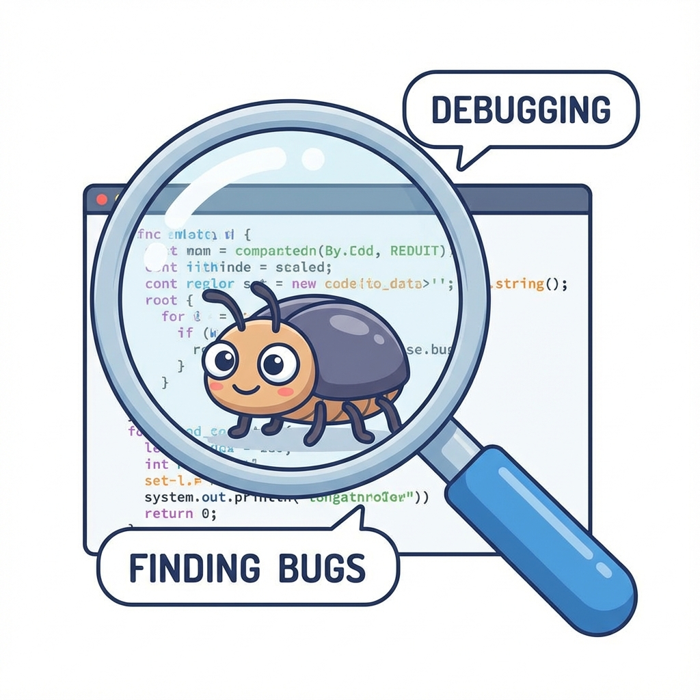
The Debugging Cycle (အမှားရှာဖွေခြင်း သံသရာ)
အမှားရှာခြင်းဆိုစာ တစ်ခါတည်းနဲ့ ပြီးရေအလုပ် မဟုတ်ပါ။ အမှားမကင်းမချင်း ထပ်ခါထပ်ခါ လုပ်ရတဲ့ လုပ်ငန်းစဉ်ပါ။
1. START: Run Program
2. CHECK: Is there an Error?
- NO: Success! (END)
- YES: Go to Step 3
3. READ: Read Error Message
4. LOCATE: Find Line Number
5. FIX: Edit Code
6. RETRY: Go back to Step 1
Common Error Types (အမှားအမျိုးအစားတိ)
Programming မှာ အမှား (၂) မျိုး အတွေ့ရများပါရေ။
-
Syntax Errors (သဒ္ဒါအမှား):
- ဘာသာစကား စည်းမျဉ်းစည်းကမ်း မှားစွာပါ။ ဥပမာ - စာလုံးပေါင်းမှားစွာ၊ ကွင်းပိတ်ကျန်ခစွာ။
- Analogy: "စိုက် ချီး" လို့ ပြောလိုက်သလိုမျိုးပါ။ အဓိပ္ပာယ်တော့ ရှိပေမယ့် စကားလုံး အစီအစဉ် မှားနေလို့ နားမလည်တာမျိုးပါ။
- ကွန်ပျူတာက ယင့်ပိုင်အမှားမျိုးဆို ချက်ချင်းတန့်လားဖို့ ပြောပြပါရေ။
-
Logic Errors (ယုတ္တိအမှား):
- စည်းမျဉ်းတော့ မှန်ရေ၊ ယကေလေ့ ကိုယ်လိုချင်တဲ့ အဖြေမထွက်စွာပါ။ ဥပမာ - ပေါင်းရဖို့အစား နှုတ်မိစွာ။
- Analogy: "ဆားထည့်ပါ" လို့ ပြောရဖို့အစား "သကြားထည့်ပါ" လို့ မှားပြောမိတာမျိုးပါ။ ဟင်းချက်လို့တော့ ရကေလည်း အရသာ (Output) မှားသွားပါလိမ့်မယ်။
- ဒေအမှားက ရှာရ နည်းနည်းခက်ပါရေ။ Program က Run လို့ရနေလို့ပါ။
2.1 Common Logic Errors (အတွိ့ရများရေ ယုတ္တိအမှားတိ)
- Infinite Loop: Loop ပတ်တာ လုံးဝ မရပ်ဘဲ Program ဟန်း (Hang) လားခြင်း။ (Stop Condition မှားရွီမိလို့ ဖြစ်တတ်သည်)
- Off-by-one Error: ၁၀ ကြိမ် လုပ်ရမည့်အစား ၉ ကြိမ် (သို့) ၁၁ ကြိမ် လုပ်မိခြင်း။
အမှားရှာနည်းတိ
- Rubber Duck Debugging: ကိုယ့်ပြဿနာကို အရုပ်ချေတစ်ရုပ် (သို့မဟုတ် သူငယ်ချင်း) ကို တစ်ဆင့်ချင်းစီ ပြန်ရှင်းပြကြည့်ပါ။ ရှင်းပြရင်းနန့် အမှားကို ကိုယ်တိုင် သတိထားမိလာတတ်ပါရေ။
- Print Statements: Code နေရာအနှံ့မှာ စာတိ ထုတ်ကြည့်ပနာ ဇာနားရောက်ကေ မှားလားလဲ လိုက်စစ်ဆေးစွာပါ။
သင်ခန်းစာ အကျဉ်းချုပ်
- IPO Model: Input -> Process -> Output။
- Debugging: အမှားရှာဖွေ ပြင်ဆင်ခြင်း။
- Errors: Syntax Error (သဒ္ဒါမှား) vs Logic Error (တွေးခေါ်ပုံမှား)။
လေ့ကျင့်ခန်း (Exercise):
- Debug the Tea: လက်ဖက်ရည်ဖျော်နည်း Algorithm မှာ အောက်ပါ အမှားနှစ်ခု ပါနီပါရေ၊ ပြင်ဆင်ရွီးသားပီးပါ။
- Step 1: ရေနွီးအိုး တည်ပါ။
- Step 2: ခွက်ထဲကို လက်ဖက်ခြောက် ထည့်ပါ။
- Step 3: သကြား ထည့်ပါ။
- Step 4: ရီနွီး ဆူဗျာယ်။ (ရီနွီးမထည့်ရသိပါ!)
- Step 5: သောက်ပါ။
- ဖုန်းပျောက်လားရေ ဆိုပါစို့။ ဖုန်းပြန်ရှာဖို့အတွက် IPO Model ကိုသုံးပနာ ဇာပိုင် ဖြေရှင်းမလဲ စဉ်းစားရွီးသားပါ။
Chapter 6: Conclusion & Next Steps (နိဂုံးနန့် ရှေ့ဆက်ရန်)
အခုအချိန်မှာ "Code မရေးတတ်သိးကေလေ့ Programmer တစ်ယောက်ပိုင် တွေးခေါ်တတ်နီဗျာ" လို့ ပြောနိုင်ပါရေ။
၁။ ဇာဘာသာစကားကို စလေ့လာသင့်လဲ? (Choosing your first language)
လူတိုင်းမီးကတ်တေ မေးခွန်းပါ။ အဖြေကတော့ "ဇာလုပ်ချင်လဲ?" ပေါ်မှာ မူတည်ပါရေ။
-
Python:
- ဇာလုပ်လို့ရလဲ: Data Science, Artificial Intelligence (AI), Web Backend, Automation.
- အားသာချက်: လွယ်ရေ၊ လူသုံးများရေ။ Beginner တိအတွက် အသင့်တော်ဆုံးပါ။
-
JavaScript:
- ဇာလုပ်လို့ရလဲ: Web Development (Websites ဖန်တီးချင်ကေ မဖြစ်မနေ သင်ရပါဖို့)။
- အားသာချက်: Browser တိုင်းမှာ Run လို့ရရေ။ ရလဒ်ကို ချက်ချင်း မြင်ရရေ။
-
Java:
- ဇာလုပ်လို့ရလဲ: Android Apps, Enterprise Software (ဘဏ်လို ကြီးမားတဲ့ လုပ်ငန်းကြီးတိရဲ့ System).
- အားသာချက်: နေရာစုံမှာ သုံးလို့ရရေ။ (Write Once, Run Anywhere).
-
C / C++:
- ဇာလုပ်လို့ရလဲ: Game Development, Computer Software.
- အားသာချက်: ကွန်ပျူတာရဲ့ လုပ်ဆောင်မှုကို နက်နက်နဲနဲ နားလည်စေပါရေ။
၂။ ဆက်လက်လေ့လာရန် အရင်းအမြစ်တိ
- FreeCodeCamp: Web Development အတွက် အကောင်းဆုံး အခမဲ့ နေရာပါ။
- CS50 (Harvard): Computer Science အခြေခံကို သေချာသင်ချင်ကေ Harvard တက္ကသိုလ်ရဲ့ CS50 Course ကို YouTube မှာ အခမဲ့ ကြည့်ရှုနိုင်ပါရေ။
- W3Schools: ကုဒ်တိကို လက်တွေ့ စမ်းရေးကြည့်ဖို့ ကောင်းပါရေ။
၃။ Programming Ethics (ကျင့်ဝတ်တိ)
Programmer တစ်ယောက်မှာ စွမ်းရည် (Power) ရှိသလို တာဝန်ယူမှု (Responsibility) လည်း ရှိရပါဖို့။
- Do No Harm: သူတစ်ပါးကို ထိခိုက်စေမယ့် Virus တိ၊ Hack စွာတိ မလုပ်ရပါ။
- Respect Privacy: အသုံးပြုလူတိရဲ့ ကိုယ်ရေးအချက်အလက် (Data) ကို လေးစားလိုက်နာရပါဖို့။
- Be Honest: မိမိရွီးရေ ကုဒ်ကြောင့် ဖြစ်လာမယ့် အကျိုးဆက်တိကို တာဝန်ယူရပါဖို့။
၄။ နိဂုံး (Final Words)
Programming သင်ယူရစွာ ခက်ခဲနိုင်ပါရေ။ အထူးသဖြင့် အစပိုင်းမှာပါ။ Error တက်တိုင်း စိတ်မပျက်ပါကေ့။ Programmer တိုင်း (Google မှာ လုပ်နီလူတိတောင်မှ) နိတိုင်း Error တက်ပနာ နိတိုင်း ရှာဖွေဖြေရှင်းနီကြရစွာပါ။
"Consistency is Key" - နိတိုင်း နည်းနည်းချင်းစီ ပုံမှန် လေ့လာလားပါ။
သင်ခန်းစာ အကျဉ်းချုပ်
- Language Choice: Web (JS)၊ AI (Python)၊ System (C++)။
- Ethics: သူတစ်ပါးကို မထိခိုက်စီရ၊ Data ကို လေးစားရမည်။
- Consistency: နေ့စဉ် ပုံမှန် လေ့လာခြင်းက အဓိက။
လေ့ကျင့်ခန်း (Exercise): Your First Project Idea: ဒီစာအုပ်ကို ဖတ်ပြီးတဲ့နောက် သင် ပထမဆုံး ကိုယ်တိုင် ရွီးချင်ရေ Project တစ်ခုကို စဉ်းစားပါ။
- Project Name: (ဥပမာ - My Calculator)
- Purpose: (ဇာလုပ်ပီးဖို့လဲ?)
- Inputs: (ဇာတိ ထည့်သွင်းရဖို့လဲ?)
ဖိုက်တင်းပါ။
Data Structures (အချက်အလက် တည်ဆောက်ပုံများ)
Data Structure ဆိုစွာ ကွန်ပျူတာထဲမှာ အချက်အလက် (Data) တိကို စနစ်တကျ သိမ်းဆည်းရေ ပုံစံတိ ဖြစ်ပါရေ။ ဇာပိုင်သိမ်းလဲ၊ ဇာပိုင်ပြန်ယူလဲဆိုစွာ ကိုယ်လုပ်ဖို့ အလုပ်ပေါ်မူတည်ပနာ ရွီးချယ်ရပါဖို့။
မာတိကာ
Chapter 1: Linear Data Structures
အချက်အလက်တိကို တစ်ခုပြီးတစ်ခု အစဉ်လိုက် သိမ်းဆည်းရေ ပုံစံတိ။
- Array
- Linked List
- Stack
- Queue
Chapter 2: Non-Linear Data Structures
အချက်အလက်တိကို ရှုပ်ထွီးရေ ချိတ်ဆက်မှုတိနန့် သိမ်းဆည်းရေ ပုံစံတိ။
- Hash Map
- Binary Search Tree (BST)
- Heap
- Graph
- Trie
Chapter 1: Linear Data Structures (အစဉ်လိုက် အချက်အလက် တည်ဆောက်ပုံများ)
အချက်အလက်တိကို တစ်ခုပြီးတစ်ခု အစဉ်လိုက် သိမ်းဆည်းရေ Data Structure တိကို လေ့လာကတ်ပါဖို့။
1. Array (အစဉ်လိုက် စီထားရေ ဇယား)

ယင်းက ဇာလဲ? အရွယ်အစား သတ်မှတ်ထားပြီးသား အခန်းကန့်ချေတိမှာ Data တိကို တစ်ခုပြီးတစ်ခု အစဉ်လိုက် ထည့်ထားရေ ပုံစံပါ။
လက်တွိ့ဘဝ ဥပမာ - ကြက်ဥကပ် (Egg Carton) ပိုင်ပါရာ။ ကြက်ဥကပ်တစ်ခုမှာ အလုံး ၃၀ ဆံ့ရေဆိုကေ ၃၀ ရာ ထည့်လို့ရဖို့။ ၃၁ လုံးမြောက် ထပ်ထည့်ချင်ကေ ကပ်အသစ် လိုပါလိမ့်မေ။ ၅ လုံးမြောက် ကြက်ဥကို ယူချင်ကေ တန်းပနာ ယူလိုက်ရုံပါရာ။
ဇာခါ သုံးဖို့လဲ?
- သိမ်းရဖို့ အရွီအတွက်ကို ကြိုသိထားရေ အခါ။
- Data တိကို နံပါတ်စဉ် (Index) နန့် အမြန်ဆုံး ယူချင်ရေ အခါ။
Visualization:
Index: 0 1 2 3 4
Data: [ 10 | 20 | 30 | 40 | 50 ]
2. Linked List (ကွင်းဆက် ဇယား)

ယင်းက ဇာလဲ? Data တစ်ခုနန့် တစ်ခု လက်တွဲပနာ ချိတ်ထားရေ ပုံစံပါ။ Data တစ်ခုစီမှာ သူ့နောက်က Data ဇာနားမှာ ရှိရေလဲဆိုစွာ လိပ်စာ (Pointer) ပါပါရေ။
လက်တွိ့ဘဝ ဥပမာ - ရတနာသိုက် လမ်းညွှန် ပိုင်ပါရာ။ ပထမ သဲလွန်စကို တွိ့မှ ဒုတိယ သဲလွန်စ ရှိရေနီရာကို သိရဖို့။ ဒုတိယကို ရမှ တတိယကို ဆက်သွားလို့ရဖို့။ ချက်ချင်းကြီး ပဉ္စမမြောက်နီရာကို ရောက်မသွားနိုင်ပါ။
ဇာခါ သုံးဖို့လဲ?
- Data အရွီအတွက် အတိအကျ မသိရေ အခါ (လိုသလောက် ထပ်ချိတ်လားလို့ရရေ)။
- ကြားထဲက Data တိကို ဖျက်စွာ၊ ထပ်ထည့်စွာ မကြာမကြ လုပ်ရရေ အခါ။
Visualization:
[Head] -> [Data|Next] -> [Data|Next] -> null
3. Stack (ထပ်စီ - နောက်ဆုံးဝင် ပထမထွက်)

ယင်းက ဇာလဲ? LIFO (Last In, First Out) ပုံစံပါ။ နောက်ဆုံးမှ ရောက်လာရေ အရာက အရင်ဆုံး ပြန်ထွက်ရပါရေ။
လက်တွိ့ဘဝ ဥပမာ - ပန်းကန်ပြား ဆီးပြီး ထပ်ထားစွာ မျိုးပါ။ ဆီးပြီးသား ပန်းကန်တိကို တစ်ချပ်ပြီး တစ်ချပ် ထပ်လိုက်မေ။ ပြန်ယူသုံးရေ အခါ ထိပ်ဆုံး (နောက်ဆုံးမှထားရေ) ပန်းကန်ကိုရာ အရင်ယူလို့ ရပါဖို့။
ဇာခါ သုံးဖို့လဲ?
- Undo (Ctrl+Z) လုပ်ဆောင်ချက် (နောက်ဆုံးမှားစွာကို အရင်ဖျက်စွာ)။
- Web Browser ရဲ့ Back Button (နောက်ဆုံးကြည့်ထားရေ စာမျက်နှာကို ပြန်ခေါ်စွာ)။
Visualization:
| Top |
|_______|
4. Queue (တန်းစီ - ဦးသူ ပထမထွက်)

ယင်းက ဇာလဲ? FIFO (First In, First Out) ပုံစံပါ။ အရင်ဆုံး ရောက်ရေလူက အရင်ဆုံး ဝန်ဆောင်မှု ရပါရေ။
လက်တွိ့ဘဝ ဥပမာ - ဘတ်စ်ကားမှတ်တိုင်မှာ တန်းစီစွာ မျိုးပါ။ အရင်ရောက်ရေလူ အရင်ကားထက်တက်ရရေ။ နောက်မှ ရောက်ရေလူက အနောက်ဆုံးမှာ နီရရေ။
ဇာခါ သုံးဖို့လဲ?
- Printer မှာ စာရွက်ထုတ်ဖို့ စောင့်စွာ (အရင်ပို့ရေ ဖိုင် အရင်ထွက်ဖို့)။
- Customer Service မှာ ဖုန်းပြောဖို့ စောင့်စွာ။
Visualization:
Rear -> [ C ] -> [ B ] -> [ A ] -> Front
သင်ခန်းစာ အကျဉ်းချုပ်
- Array: အရွယ်အစား သတ်မှတ်ထားရေ အစဉ်လိုက် ဇယား။
- Linked List: တစ်ခုနန့် တစ်ခု ချိတ်ဆက်ထားရေ ကွင်းဆက်။
- Stack: နောက်ဆုံးဝင် ပထမထွက် (LIFO)။
- Queue: ဦးသူ ပထမထွက် (FIFO)။
လေ့ကျင့်ခန်း (Exercises)
- Music Playlist: မင်းရေ MP3 App တစ်ခု ရွီးနီရေ ဆိုပါစို့။ "Next Song" နှင့် "Previous Song" ကို လွယ်လွယ်ကူကူ လားနိုင်ရန် Array နှင့် Linked List မည်သည်ကို ရွီးချယ်ဖို့လဲ? ဇာကြောင့်လဲ?
- Browser History: Web Browser ၏ "Back" ခလုတ်ကို ဖိလိုက်ကေ နောက်ဆုံးကြည့်ထားရေ စာမျက်နှာကို ပြန်ရောက်လားရေ။ အေစနစ်အတွက် Stack သို့မဟုတ် Queue မည်သည်ကို သုံးသင့်လဲ?
Chapter 2: Non-Linear Data Structures (ကွန်ရက်ပုံစံ အချက်အလက် တည်ဆောက်ပုံများ)
အချက်အလက်တိကို ရှုပ်ထွီးရေ ချိတ်ဆက်မှုတိနန့် သိမ်းဆည်းရေ Data Structure တိကို လေ့လာကတ်ပါဖို့။
1. Hash Map (သော့ချိတ် ဇယား)

ယင်းက ဇာလဲ? Key (သော့) နန့် Value (တန်ဖိုး) တွဲပနာ သိမ်းရေ ပုံစံပါ။ Key ကို သိစွာနန့် Value ကို ချက်ချင်း ရှာတွိ့နိုင်ပါရေ။
လက်တွိ့ဘဝ ဥပမာ - ဖုန်းစာအုပ် (Contacts) ပိုင်ပါရာ။ "မောင်မောင်" (Key) ဆိုရေ နာမည်ကို ရှာလိုက်စွာနန့် သူ့ဖုန်းနံပါတ် (Value) ကို တန်းတွိ့ပါရေ။ တစ်ရွက်ချင်းစီ လှန်ရှာစရာ မလိုပါ။
ဇာခါ သုံးဖို့လဲ?
- Data တိကို အမြန်ဆုံး ရှာဖွေချင်ရေ အခါ။
- Password တိ၊ Username တိ စစ်ဆေးရေ အခါ။
Visualization:
Key "John" -> Hash() -> Index 0 -> [ "John": 25 ]
Key "Jane" -> Hash() -> Index 1 -> [ "Jane": 30 ]
2. Binary Search Tree (သစ်ပင်ပုံစံ)

ယင်းက ဇာလဲ? Data တိကို အဆင့်ဆင့် ခွဲပနာ သိမ်းရေ ပုံစံပါ။ ဘယ်ဘက် အကိုင်းမှာ ငယ်ရေ ဂဏန်း၊ ညာဘက် အကိုင်းမှာ ကြီးရေ ဂဏန်း ဆိုပနာ စည်းကမ်းနန့် သိမ်းပါရေ။
လက်တွိ့ဘဝ ဥပမာ - ဆုံးဖြတ်ချက်ချရေ ပုံစံ (Decision Tree) ပိုင်ပါရာ။ မေးခွန်းတစ်ခုမေးမေ "ဟုတ်/မဟုတ်" ဖြေမေ။ အဖြေပေါ်မူတည်ပနာ နောက်တဆင့် ထပ်လားပိုင်ပါရာ။
ဇာခါ သုံးဖို့လဲ?
- Data တိကို စီထားရေ အတိုင်း လိုချင်ရေ အခါ။
- ရှာဖွီစွာ မြန်ချင်ရေ အခါ (Linked List ထက် ပိုယင်ရေ)။
Visualization:
10
/ \
5 15
3. Heap (ဦးစားပီး အစီအစိုင်)

ယင်းက ဇာလဲ? အရေးကြီးဆုံး (သို့) အငယ်ဆုံး/အကြီးဆုံး Data ကို ထိပ်ဆုံးမှာ အမြဲထားရေ ပုံစံပါ။
လက်တွိ့ဘဝ ဥပမာ - ဆီးရုံ အရေးပေါ်ဌာန ပိုင်ပါရာ။ ဇာလူအရင်ရောက်ရောက်၊ အသည်းအသန် ဖြစ်နီရေ လူနာ (Priority High) ကို ဆရာဝန်က အရင်ကုပေးသပိုင်မျိုးပါ။
ဇာခါ သုံးဖို့လဲ?
- အလုပ်တိကို ဦးစားပီး အဆင့်နန့် လုပ်ဆောင်ချင်ရေ အခါ။
- Google Maps မှာ အတိုဆုံး လမ်းကြောင်း ရှာရေ အခါ (အကွာအဝီး အနည်းဆုံးလမ်းကို ဦးစားပီး ရှာစွာ)။
Visualization (Min-Heap):
10 (Smallest)
/ \
20 30
4. Graph (ကွန်ရက်)

ယင်းက ဇာလဲ? Data တိ တစ်ခုနန့် တစ်ခု ဇာပိုင် ပတ်သက်ဆက်နွယ်နီလဲ ဆိုစွာကို ပြရေ ကွန်ရက်ကြီးပါ။
လက်တွိ့ဘဝ ဥပမာ - Facebook Friends ပိုင်ပါရာ။ ကိုယ်နန့် သူငယ်ချင်းတိ ချိတ်ဆက်နီရေ။ သူတို့ကလည်း တခြားလူတိနန့် ထပ်ချိတ်ဆက်နီရေ။ မြေပုံ ပိုင်မျိုးလည်း မြင်နိုင်ပါရေ။ မြို့တိက Data ဆိုကေ လမ်းတိက ချိတ်ဆက်မှု (Edge) တိပါ။
ဇာခါ သုံးဖို့လဲ?
- GPS လမ်းကြောင်း ရှာရေ အခါ။
- လူမှုကွန်ရက် (Social Network) တိ တည်ဆောက်ရေ အခါ။
Visualization:
(A) -- (B)
| |
(D) -- (E)
5. Trie (စာလုံးစစ် သစ်ပင်)

ယင်းက ဇာလဲ? စာလုံးတိကို ရှိစကားလုံး (Prefix) တူစာချင်း စုပနာ သိမ်းရေ ပုံစံပါ။
လက်တွိ့ဘဝ ဥပမာ - Google မှာ စာရိုက်ရှာစွာ (Autocomplete) မျိုးပါ။ "Alg" လို့ ရိုက်လိုက်စွာနန့် "Algorithm", "Algebra" စသဖြင့် "Alg" နန့် စရေ စကားလုံးတိကို အကြံပီးပိုင်မျိုးပါ။
ဇာခါ သုံးဖို့လဲ?
- စာလုံးပေါင်း စစ်ရေ အခါ (Spell Checker)။
- ရှာဖွေရီး စနစ်တိမှာ စာလုံး ဖြည့်စွက်ပီးချင်ရေ အခါ (Auto-complete)။
Visualization:
Root -> [C] -> [A] -> [T] (End)
-> [R] -> [R] (End)
သင်ခန်းစာ အကျဉ်းချုပ်
- Hash Map: Key နန့် Value တွဲသိမ်းရေ ပုံစံ။
- BST: ဘယ်ငယ် ညာကြီး စည်းကမ်းနန့် သိမ်းရေ သစ်ပင်။
- Graph: ကွန်ရက်ပုံစံ ချိတ်ဆက်မှုတိ။
လေ့ကျင့်ခန်း (Exercises)
- Library System: စာအုပ်နာမည် ရိုက်ထည့်လိုက်သည်နှင့် စာအုပ်ရှိမရှိ ချက်ချင်း သိချင်ရေ။ ဇာ Data Structure ရေ အသင့်တော်ဆုံးလဲ? (Hint: Hash Map vs Array)
- Friend Recommendation: "မင်း သူငယ်ချင်း၏ သူငယ်ချင်းတိ" ကို ရှာဖွေပြီး မိတ်ဆက်ပီးချင်ရေ။ ဇာ Data Structure ကို သုံးဖို့လဲ?
Algorithms (လုပ်ဆောင်ပုံ အဆင့်ဆင့်)
ကွန်ပျူတာပရိုဂရမ်တစ်ခု ဇာပိုင်အလုပ်လုပ်သလဲဆိုစွာ နားလည်ဖို့အတွက် အသုံးများရေ Algorithms တိကို အပိုင်း (၃) ပိုင်းခွဲပြီး လေ့လာလားပါဖို့။
မာတိကာ
Chapter 1: Searching Algorithms
အချက်အလက်တိကို ရှာဖွေရေ နည်းလမ်းတိ။
- Linear Search
- Binary Search
Chapter 2: Sorting Algorithms
အချက်အလက်တိကို စနစ်တကျ စီစီညီညီဖြစ်အောင် စီရေ နည်းလမ်းတိ။
- Bubble Sort
- Selection Sort
- Insertion Sort
- Merge Sort
- Quick Sort
Chapter 3: Graph Algorithms
လမ်းကြောင်း ရှာဖွေရေ (Routing) နန့် ကွန်ရက် (Network) ဆိုင်ရာ နည်းလမ်းတိ။
- Breadth-First Search (BFS)
- Depth-First Search (DFS)
- Dijkstra's Algorithm
Chapter 1: Searching Algorithms (ရှာဖွီခြင်း Algorithms)
Information တိကို ရှာဖွေရာမှာ အသုံးပြုရေ အခြေခံ Algorithms တိကို လေ့လာကတ်ပါဖို့။
1. Linear Search (အစဉ်လိုက် ရှာဖွီခြင်း)
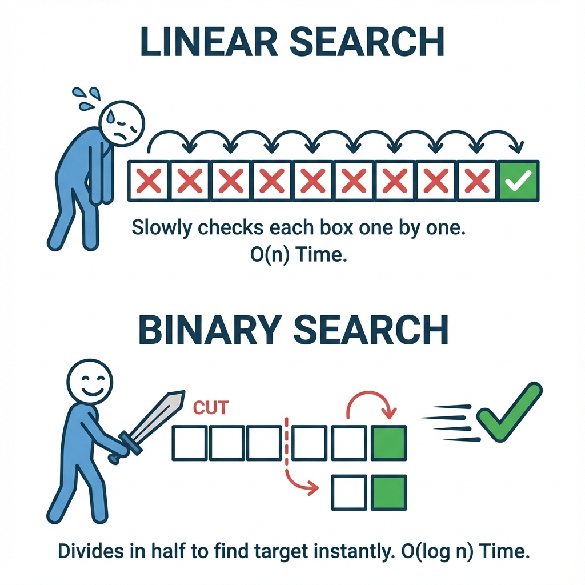
ယင်းက ဇာလဲ? စာအုပ်ပုံထဲမှာ ကိုယ်လိုချင်ရေ စာအုပ်ကို မတွိ့မချင်း တစ်အုပ်ပြီးတစ်အုပ် လိုက်ရှာရေ နည်းလမ်းပါ။ ရှာစရာရှိစွာ အကုန်လုံးကို အစကနီ အဆုံးထိ တစ်ခုချင်းစီ လိုက်စစ်ဆေးပါရေ။
လက်တွိ့ဘဝ ဥပမာ - အင်္ကျီဆိုင်မှာ ကိုယ်လိုချင်ရေ "အနီရောင်တီရှပ်" ကို ရှာရေအခါ၊ ချိတ်ထားရေ အင်္ကျီတိကို ထိပ်ဆုံးကနီစပြီး "ဒါလား? မဟုတ်ဘူး.. ဒါလား? မဟုတ်ဘူး" နန့် မတွိ့မချင်း လိုက်ကြည့်သပိုင်မျိုးပါ။
ဇာပိုင် အလုပ်လုပ်သလဲ?
- ပထမဆုံး တစ်ခုကို ယူကြည့်ပါ။
- ကိုယ်ရှာချင်စွာ ဟုတ်လား?
- ဟုတ်ရေ ဆိုကေ တွိ့ဗျာယ်! (ပြီးပါယာ)
- မဟုတ်ဘူး ဆိုကေ နောက်တစ်ခုကို ဆက်ကြည့်မယ်။
- အကုန်ကုန်ရေအထိ မတွိ့ကေ "မရှိပါ" လို့ ပြန်ပြောပါ။
Visualization:
Target: 30 (၃၀ ကို ရှာမေ)
[ 10 ] -> [ 50 ] -> [ 30 ] -> တွိ့ပြီ!
စစ်မည် စစ်မည် စစ်မည်
Pseudocode:
START
FOR EACH Item IN List
IF Item == Target THEN
RETURN Index (Found)
END IF
END FOR
RETURN -1 (Not Found)
END
2. Binary Search (ထက်ဝက်ခွဲ ရှာဖွေခြင်း)
ယင်းက ဇာလဲ? ဒါကတော့ ပိုယင်ရေ နည်းလမ်းပါ။ ယေလည်း Data တိက အစဉ်လိုက် စီထားပြီးသား (Sorted) ဖြစ်မှ သုံးလို့ရပါဖို့။ ရှာရဖို့ အပိုင်းအခြားကို ထက်ဝက်စီ ချိုးပြီး ရှာစွာပါ။
လက်တွိ့ဘဝ ဥပမာ - ၁ ကနီ ၁၀၀ ကြား ဂဏန်းတစ်ခု စဉ်းစားထားပါ။ ကျွန်တော်က ၅၀ လို့ ခန့်မှန်းလိုက်မေ။
- မင်းက "၅၀ ထက်ကြီးရေ" လို့ပြောကေ ၁-၅၀ ထိ ဂဏန်းတိကို ကျွန်တော် ထပ်ရှာစရာ မလိုဗျာယ်။ ၅၁-၁၀၀ ကြားကိုရာ ဆက်ရှာမေ။
- ဒီပိုင်နည်းနန့် မလိုအပ်ရေ ထက်ဝက်ကို ဖယ်ထုတ်လိုက်စွာကြောင့် တဝယင်ပါရေ။
ဇာပိုင် အလုပ်လုပ်သလဲ?
- အလယ်တည့်တည့်က Data ကို ရွီးလိုက်ပါ။
- ကိုယ်ရှာချင်စွာနန့် တူလား?
- တူကေ တွိ့ဗျာယ်!
- ကိုယ်ရှာချင်စွာက ပိုကြီးနီကေ ညာဘက်ခြမ်း (ဂဏန်းကြီးရေဘက်) ကို ဆက်ရှာပါ။
- ကိုယ်ရှာချင်စွာက ပိုငယ်နီကေ ဘယ်ဘက်ခြမ်း (ဂဏန်းငယ်ရေဘက်) ကို ဆက်ရှာပါ။
- မတွိ့မချင်း ထက်ဝက်စီ ခွဲပြီး ရှာလားပါ။
Pseudocode:
START
Left = 0, Right = Length - 1
WHILE Left <= Right
Mid = (Left + Right) / 2
IF Array[Mid] == Target THEN
RETURN Mid (Found)
ELSE IF Target < Array[Mid] THEN
Right = Mid - 1
ELSE
Left = Mid + 1
END IF
END WHILE
RETURN -1 (Not Found)
END
သင်ခန်းစာ အကျဉ်းချုပ်
- Linear Search: တစ်ခုချင်းစီ လိုက်ရှာရေ နည်းလမ်း (နှေးရေ)။
- Binary Search: ထက်ဝက်စီ ခွဲရှာရေ နည်းလမ်း (ယင်ရေ၊ Data စီထားဖို့လိုရေ)။
လေ့ကျင့်ခန်း (Exercises)
- Phone Book: ဖုန်းစာအုပ်ထဲတွင် "Mg Mg" ဆိုသော အမည်ကို ရှာချင်ရေ။ ဖုန်းစာအုပ်ရေ အက္ခရာစဉ်အလိုက် စီထားလျှင် Linear Search သို့မဟုတ် Binary Search ဇာကို သုံးသင့်လဲ?
- Missing Sock: အဝတ်ပုံထဲမှာ ပျောက်နီရေ ခြီစွပ်တစ်ဖက်ကို ရှာချင်ရေ။ Linear Search နှင့် တူလား၊ Binary Search နှင့် တူလား?
Chapter 2: Sorting Algorithms (အစဉ်လိုက် စီခြင်း Algorithms)
အချက်အလက်တိကို စနစ်တကျ စီစီညီညီဖြစ်အောင် စီရေ Algorithms တိကို လေ့လာကတ်ပါဖို့။
1. Bubble Sort (ပူပေါင်းစီခြင်း)
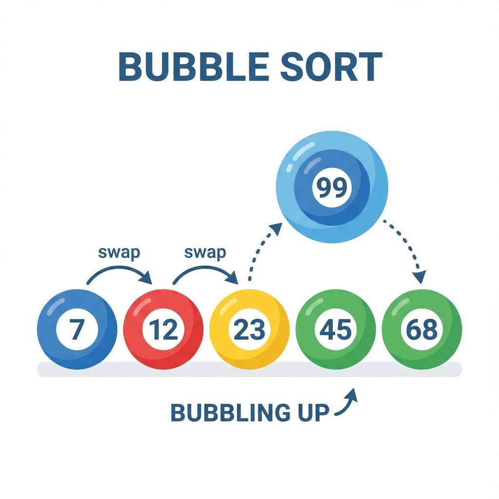
ယင်းက ဇာလဲ? အစီအစဉ်မကျရေ Data တိကို ငယ်စဉ်ကြီးလိုက် (သို့) ကြီးစဉ်ငယ်လိုက် စီချင်ရေအခါ သုံးပါရေ။ ကပ်လျက်နှစ်ခုကို ယှဉ်ကြည့်ပြီး နီရာမှားနီကေ ချိန်း (Swap) ပါရေ။
လက်တွိ့ဘဝ ဥပမာ - ကျောင်းသားတိကို အရပ်အမြင့်အတိုင်း တန်းစီခိုင်းပိုင်ပါ။ ထိပ်ဆုံးက နှစ်ယောက်ကို ယှဉ်မေ။ ဘယ်ဘက်ကလူ ပိုရှည်နီကေ နီရာချိန်းမေ။ ပြီးကေ နောက်တစ်တွဲ ဆက်ယှဉ်မေ။ ယင့်ပိုင်နည်းနန့် အရပ်အရှည်ဆုံးလူက နောက်ဆုံး (ညာဘက်အစွန်) ကို အသာသာ ရောက်လားပါလိမ့်မေ။
Pseudocode:
START
REPEAT
Swapped = False
FOR i FROM 0 TO Length - 2
IF Array[i] > Array[i+1] THEN
Swap(Array[i], Array[i+1])
Swapped = True
END IF
END FOR
UNTIL Swapped == False
END
2. Selection Sort (ရွီးထုတ်စီခြင်း)
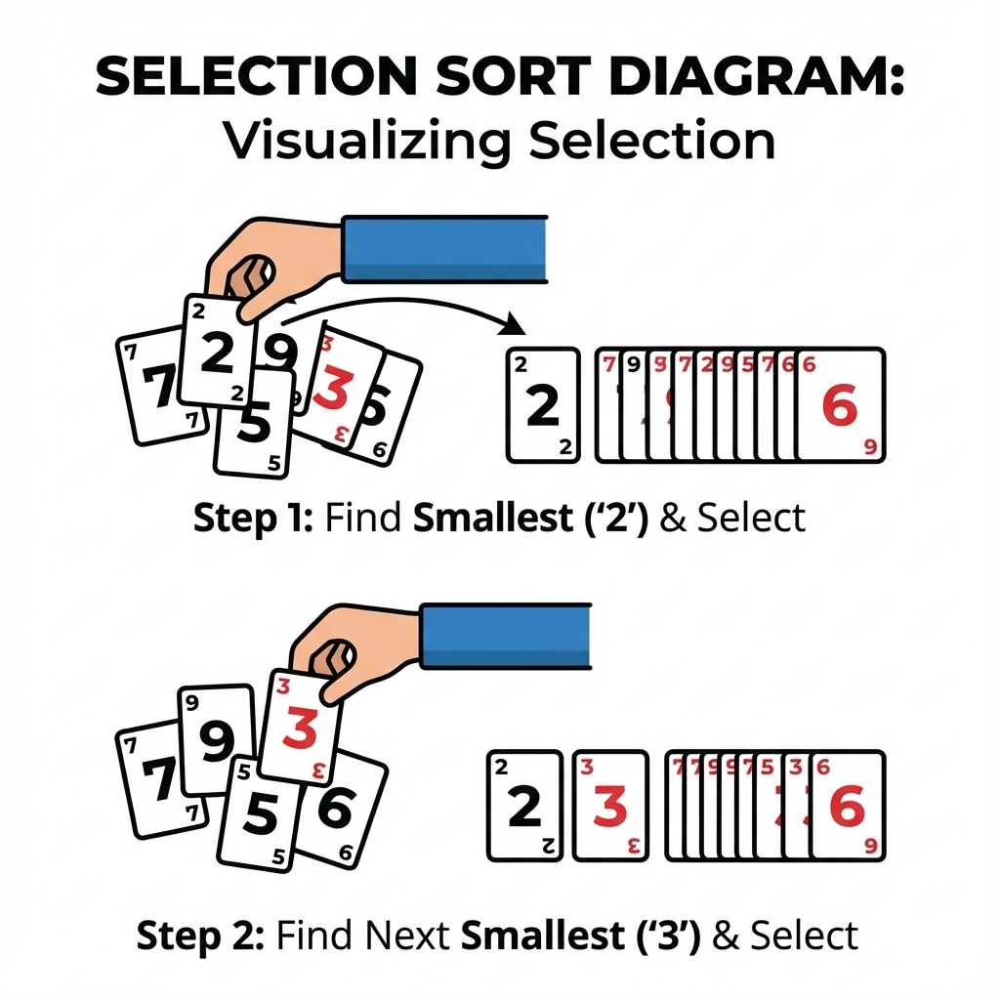
ယင်းက ဇာလဲ? Data စီရေနည်းပါရာ။ သူကတော့ အားလုံးထဲမှာ အငယ်ဆုံး တစ်ခုကို ရှာပြီး ရှိဆုံးမှာ လာထားပါရေ။ ပြီးကေ ကျန်စွာထဲက အငယ်ဆုံးကို ထပ်ရှာပြီး ဒုတိယနီရာမှာ ထားပါရေ။
လက်တွိ့ဘဝ ဥပမာ - ဖဲချပ်တိကို လက်ထဲမှာ ကိုင်ထားပြီး အငယ်ဆုံး (ဥပမာ - ၂) ကို ရှာပြီး ထိပ်ဆုံးမှာ ထုတ်ထားလိုက်ရေ။ ပြီးကေ ကျန်စွာထဲက အငယ်ဆုံး (ဥပမာ - ၃) ကို ရှာပြီး ၂ ရဲ့ဘေးမှာ ထပ်ထားပိုင်မျိုးပါ။
Pseudocode:
START
FOR i FROM 0 TO Length - 1
MinIndex = i
FOR j FROM i + 1 TO Length - 1
IF Array[j] < Array[MinIndex] THEN
MinIndex = j
END IF
END FOR
Swap(Array[i], Array[MinIndex])
END FOR
END
3. Insertion Sort (ထိုးထည့်စီခြင်း)
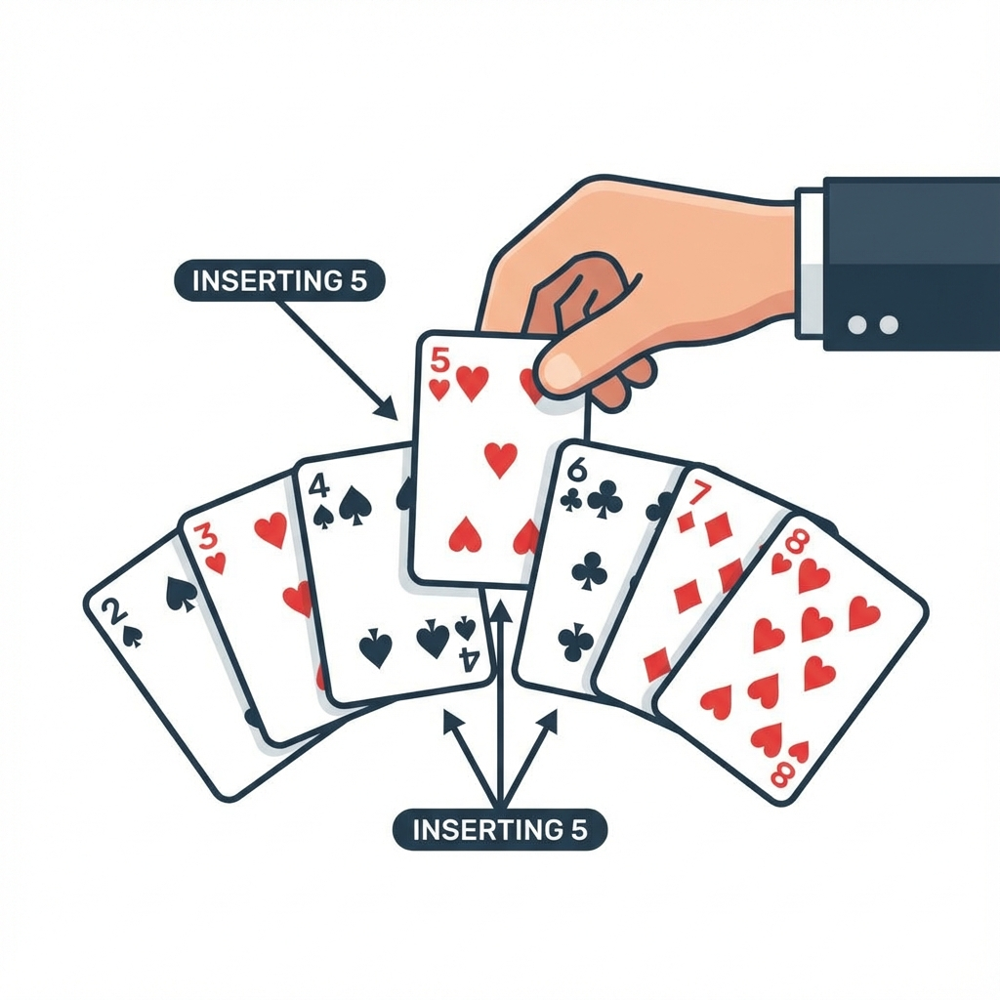
ယင်းက ဇာလဲ? Data တစ်ခုချင်းစီကို ယူပြီး သူ့နီရာအမှန်မှာ လိုက်ထည့်ရေ နည်းလမ်းပါ။
လက်တွိ့ဘဝ ဥပမာ - ဖဲကစပ်ရေအခါ ဖဲချပ်အသစ်တစ်ချပ် ဆွဲလိုက်တိုင်း လက်ထဲမှာရှိပြီးသား ဖဲချပ်တိကြားထဲက နီရာမှန် (ဥပမာ - ၅ နန့် ၇ ကြားမှာ ၆ ကို ထိုးထည့်) မှာ ထည့်လိုက်သပိုင်မျိုးပါ။
Pseudocode:
START
FOR i FROM 1 TO Length - 1
Key = Array[i]
j = i - 1
WHILE j >= 0 AND Array[j] > Key
Array[j + 1] = Array[j]
j = j - 1
END WHILE
Array[j + 1] = Key
END FOR
END
4. Merge Sort (ပေါင်းစည်းစီခြင်း)
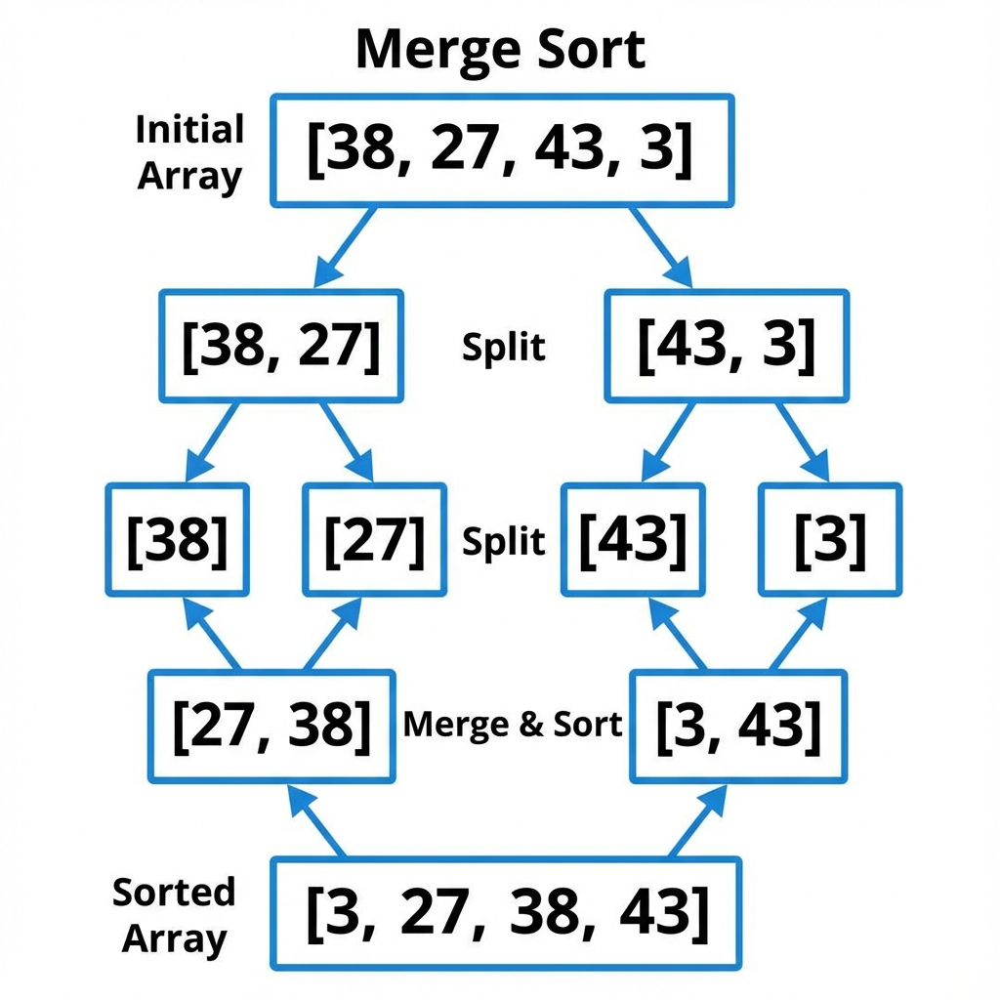
ယင်းက ဇာလဲ? Data တိအများကြီးကို တစ်ခါတည်း စီဖို့အစား၊ အရင်ဆုံး တစ်ဝက်စီ ခွဲထုတ်လိုက်ပါရေ။ တစ်ယောက်တစ်ဝက် စီပြီးမှ ပြန်ပေါင်း (Merge) ရေ နည်းလမ်းပါ။
လက်တွိ့ဘဝ ဥပမာ - စာမေးပွဲအဖြေလွှာ အုပ်ကြီးတစ်ခုလုံးကို ဆရာတစ်ယောက်တည်း စီကေကြာလို့ နှစ်ပုံခွဲပြီး ဆရာနှစ်ယောက်ကို စီခိုင်းလိုက်ရေ။ ပြီးမှ ဆရာနှစ်ယောက် ပြန်ပီးလာရေ အစီအစဉ်ကျပြီးသား စာရွက်နှစ်ပုံကို ပေါင်းလိုက်စွာပါ။
Pseudocode:
FUNCTION MergeSort(List)
IF Length of List <= 1 THEN
RETURN List
END IF
Mid = Length / 2
Left = MergeSort(List[0...Mid])
Right = MergeSort(List[Mid...End])
RETURN Merge(Left, Right)
END FUNCTION
5. Quick Sort (အမြန်စီခြင်း)
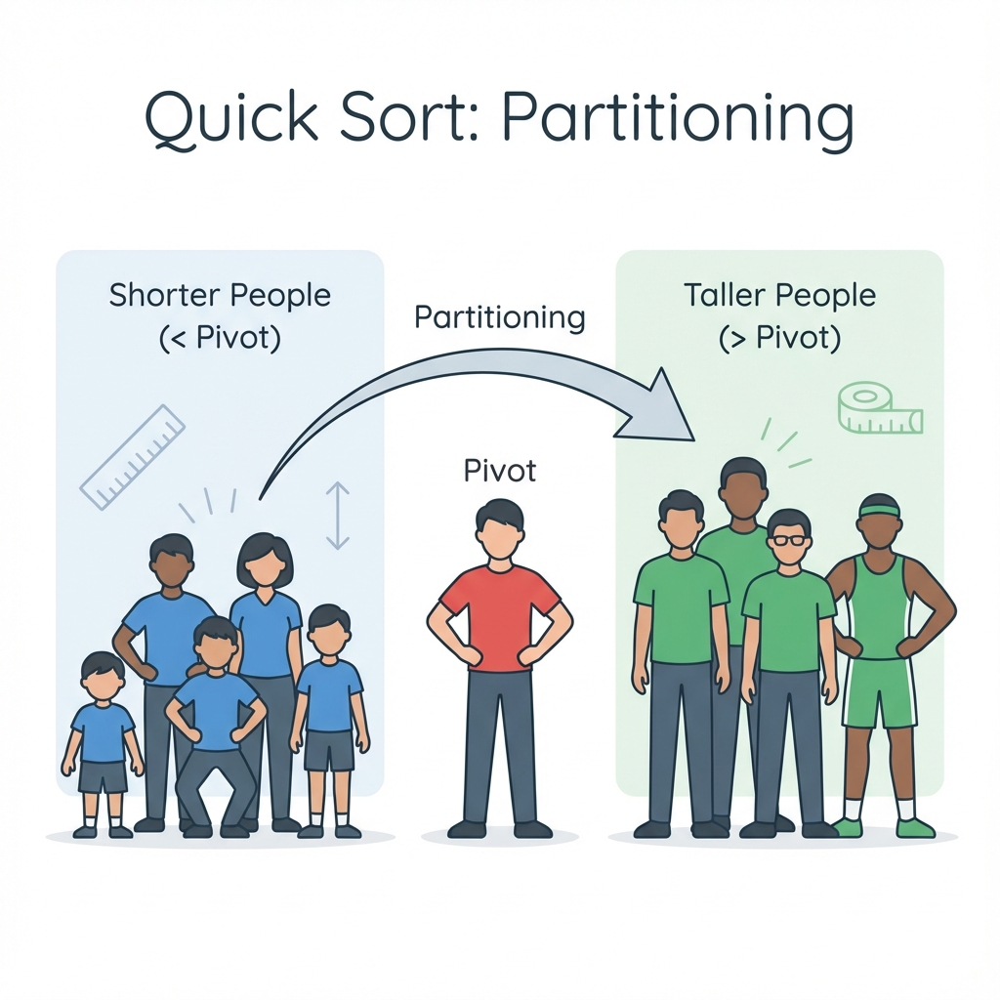
ယင်းက ဇာလဲ? Data တစ်ခု (Pivot) ကို ရွီးလိုက်ပြီး၊ သူ့ထက်ငယ်စွာတိကို ဘယ်ဘက်၊ ကြီးစွာတိကို ညာဘက် ပို့လိုက်ရေ နည်းလမ်းပါ။
လက်တွိ့ဘဝ ဥပမာ - အားကစားကွင်းမှာ ကျောင်းသားတိကို ခွဲရေအခါ "မောင်မောင် (Pivot) ထက် အရပ်ပုရေလူတိ ဘယ်ဘက်လား၊ ရှည်ရေလူတိ ညာဘက်လား" လို့ အုပ်စုခွဲလိုက်သပိုင်ပါရာ။ ပြီးမှ ယင့်အုပ်စုတိကို ထပ်ပြီး ခွဲလားစွာပါ။
Pseudocode:
FUNCTION QuickSort(List)
IF Length of List <= 1 THEN
RETURN List
END IF
Pivot = SelectPivot(List)
Left = Elements < Pivot
Right = Elements > Pivot
RETURN QuickSort(Left) + [Pivot] + QuickSort(Right)
END FUNCTION
သင်ခန်းစာ အကျဉ်းချုပ်
- Bubble Sort: ဘေးချင်းယှဉ်ပြီး ချိန်းရေနည်း။
- Selection Sort: အငယ်ဆုံးကို ရွီးထုတ်ရေနည်း။
- Merge Sort: ခွဲထုတ်ပြီးမှ ပြန်ပေါင်းစီရေနည်း။
လေ့ကျင့်ခန်း (Exercises)
- Card Game: ဖဲချပ်တိကို လက်ထဲတွင် ကိုင်ထားပြီး ငယ်စဉ်ကြီးလိုက် စီချင်သည်။ ဖဲချပ်အသစ်တစ်ချပ် ဆွဲတိုင်း နေရာမှန်တွင် ထိုးထည့်လိုက်ခြင်းသည် မည်သည့် Sorting Algorithm နှင့် တူသနည်း?
- School Assembly: ကျောင်းသားတိကို အရပ်အမြင့်အလိုက် တန်းစီခိုင်းသည်။ ဘေးချင်းယှဉ်ရပ်နီရေ ကျောင်းသားနှစ်ဦးကို ကြည့်ပြီး အရပ်ရှည်သူကို နောက်ပို့ရေနည်းလမ်းရေ ဇာ Algorithm လဲ?
Chapter 3: Graph Algorithms (ကွန်ရက် ရှာဖွီခြင်း Algorithms)
Algorithm လောကမှာ အရေးအကြီးဆုံးဖြစ်ရေ Graph (ကွန်ရက်) တိကို ဇာပိုင် ရှာဖွီလဲ၊ အတိုဆုံးလမ်းကြောင်း ဇာပိုင်ရှာလဲ ဆိုစွာကို လေ့လာကတ်ပါဖို့။
1. Breadth-First Search (BFS - ရီပြင်ညီ ရှာဖွီခြင်း)
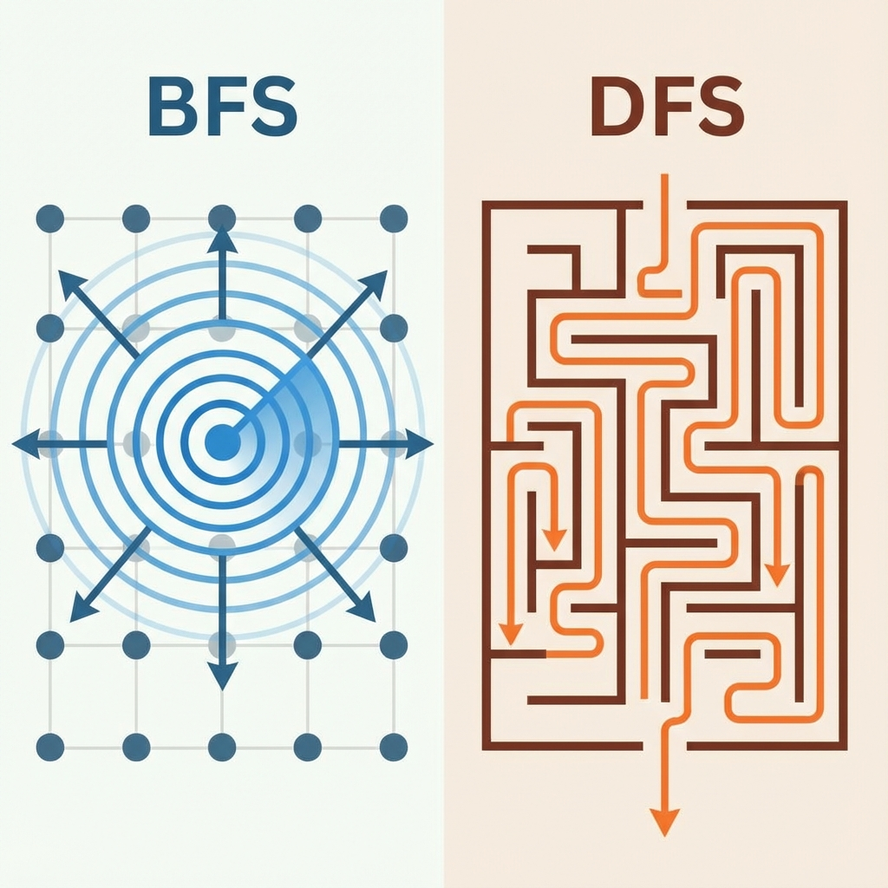
ယင်းက ဇာလဲ? နီရာတစ်ခုကနီ စပြီး ကိုယ်နန့် အနီးဆုံးနီရာတိကို အရင်လိုက်ရှာရေ နည်းလမ်းပါ။
လက်တွိ့ဘဝ ဥပမာ - ရီကန်ထဲ ကျောက်ခဲပစ်ချလိုက်ကေ လှိုင်းတိက အလယ်ကနီ ဘေးကို အသာသာ ပြန့်ပိုင်မျိုးပါ။ ကိုယ်နန့် အနီးဆုံး သူငယ်ချင်းတိကို အရင်ရှာ၊ ပြီးမှ သူရို့ သူငယ်ချင်းတိကို ဆက်ရှာစွာမျိုး (Facebook Friends) ပိုင်။
Pseudocode:
START
Queue.Enqueue(StartNode)
Mark StartNode as Visited
WHILE Queue is NOT Empty
Node = Queue.Dequeue()
Process(Node)
FOR EACH Neighbor of Node
IF Neighbor is NOT Visited THEN
Mark Neighbor as Visited
Queue.Enqueue(Neighbor)
END IF
END FOR
END WHILE
END
2. Depth-First Search (DFS - ဒေါင်လိုက် ရှာဖွီခြင်း)
ယင်းက ဇာလဲ? လမ်းတစ်ခုကို ရွီးပြီးကေ ယင့်လမ်းအတိုင်း မဆုံးမချင်း (သို့) လမ်းပိတ်ရေအထိ ဆက်လားပြီးမှ နောက်ပြန်လှည့်ရေ နည်းလမ်းပါ။
လက်တွိ့ဘဝ ဥပမာ - ဝင်္ကပါ (Maze) ထဲက ထွက်ပေါက်ရှာပိုင်ပါရာ။ လမ်းတစ်ခုတွိ့ကေ ဝင်လားဖို့။ လမ်းပိတ်နီကေ ပြန်လှည့်လာ၊ နောက်လမ်းတစ်ခုကို ဆက်စမ်းမေ။
Pseudocode:
FUNCTION DFS(Node)
Mark Node as Visited
Process(Node)
FOR EACH Neighbor of Node
IF Neighbor is NOT Visited THEN
DFS(Neighbor)
END IF
END FOR
END FUNCTION
3. Dijkstra's Algorithm (အတိုဆုံးလမ်းကြောင်း ရှာဖွီခြင်း)
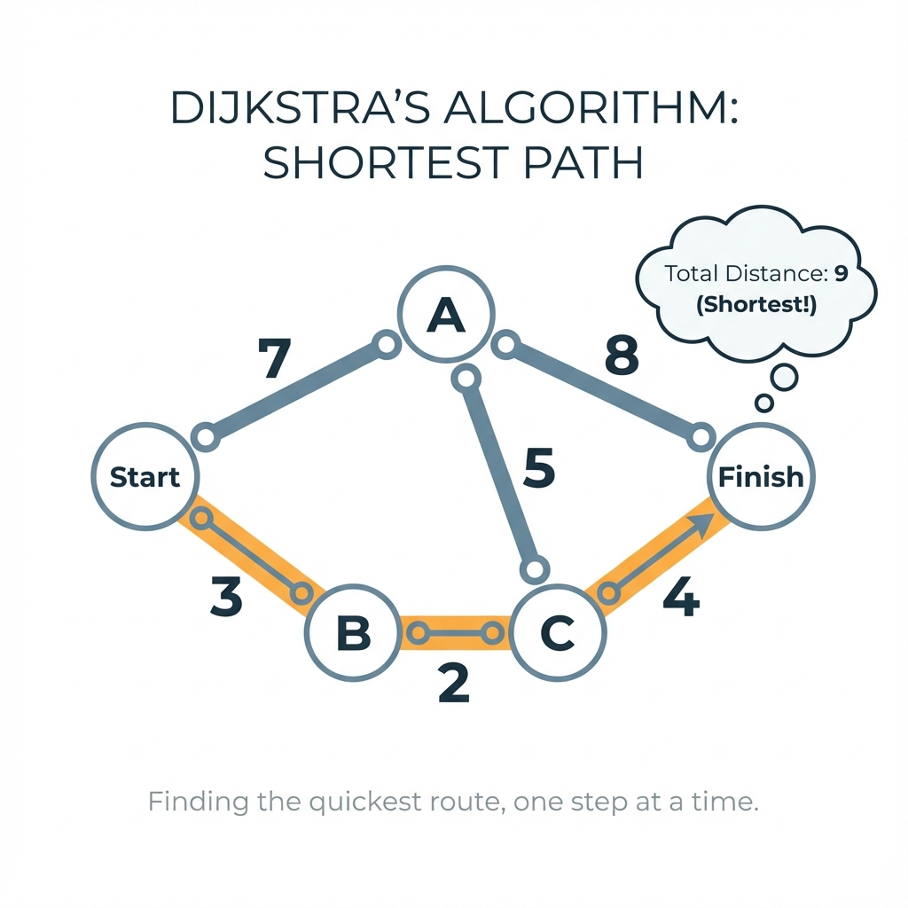
ယင်းက ဇာလဲ? နီရာနှစ်ခုကြား လားလို့ရရေ လမ်းတိအများကြီးထဲကနီ အချိန်အနည်းဆုံး၊ သို့ ခရီးအနီးဆုံး လမ်းကို တွက်ချက်ပီးစွာပါ။
လက်တွိ့ဘဝ ဥပမာ - Google Maps ပါရာ။ အိမ်ကနီ ရုံးကိုလားဖို့ လမ်းတိအများကြီးရှိကေလည်း၊ ယင့် Algorithm က ကားပိတ်ရေလမ်း၊ ဝီးရေလမ်းတိကို ရှောင်ပြီး အယင်ဆုံးရောက်ဖို့ လမ်းကြောင်းကို တွက်ပီးစွာဖြစ်ပါရေ။
Pseudocode:
START
Init Distances to Infinity, StartNode to 0
PriorityQueue.Add(StartNode, 0)
WHILE PriorityQueue is NOT Empty
CurrentNode = PriorityQueue.PopMin()
FOR EACH Neighbor of CurrentNode
NewDist = Distances[CurrentNode] + EdgeWeight
IF NewDist < Distances[Neighbor] THEN
Distances[Neighbor] = NewDist
PriorityQueue.Update(Neighbor, NewDist)
END IF
END FOR
END WHILE
END
သင်ခန်းစာ အကျဉ်းချုပ်
- BFS: ရီပြင်ညီ ရှာဖွီခြင်း (အပါးဆုံးက အရင်)။
- DFS: ဒေါင်လိုက် ရှာဖွီခြင်း (အဆုံးထိလားပြီးမှ ပြန်လှည့်)။
- Dijkstra: အတိုဆုံး လမ်းကြောင်း ရှာဖွီခြင်း။
လေ့ကျင့်ခန်း (Exercises)
- Shortest Path: သံတွဲက ပုဏ္ဏားကျွန်းသို့ ခရီးစရိတ် အနည်းဆုံး (သို့) အချိန်အနည်းဆုံးဖြင့် လားလိုရေ။ Google Maps ကဲ့သို့သော စနစ်တိရေ ဇာ Graph Algorithm ကို အသုံးပြုဖို့ ထင်ပါလဲ?
- Maze Solver: ဝင်္ကပါထဲမှ ထွက်ပေါက်ရှာစာမာ လမ်းဆုံးရေအထိ ဆက်လားပြီးမှ ပြန်လှည့်စာရေ BFS လား၊ DFS လား?
Object Oriented Programming (OOP)
OOP ဆိုစွာ ပရိုဂရမ်းမင်းကို ရွီးသားရာမှာ လက်တွိ့လောက (Real World) က အရာဝတ္ထုတိ (Objects) ကို အခြီခံပြီး စိုင်းစားရေ နည်းလမ်းတစ်ခု ဖြစ်ပါရေ။
ဇာဖြစ်လို့ OOP ကို သုံးရစွာလဲ?
- ကုဒ်တိကို ပြန်သုံးဖို့ လွယ်ကူစီခြင်း (Reusability)
- ပြင်ဆင်ရ လွယ်ကူခြင်း (Maintainability)
- ရှုပ်ထွီးရေ ပြဿနာတိကို ရှင်းလင်းစွာ ဖြေရှင်းနိုင်ခြင်း
သင်ခန်းစာတိ
Chapter 1: Classes & Objects (အခြေခံ သဘောတရားများ)
Blueprint နန့် အိမ်ဆောက်သလို၊ Class နန့် Object တိကို နားလည်ခြင်း။
Chapter 2: Inheritance & Polymorphism
မျိုးရိုးလိုက်ခြင်းနန့် ပုံစံအမျိုးမျိုး ပြောင်းလဲလုပ်ဆောင်ခြင်း။
Chapter 3: Encapsulation & Abstraction
အချက်အလက်ကို လုံခြုံစွာ သိမ်းဆည်းခြင်းနန့် မလိုရေ အစိတ်အပိုင်းတိကို ဖျောက်ထားခြင်း။
Chapter 1: Classes & Objects
OOP မှာ အဓိက အကျဆုံးက Class နန့် Object ပါ။ အေသဘောတရားနှစ်ခုက ကျွန်တော်ရို့ နိန့်စဉ်ဘဝမှာ မြင်နီတွိ့နီရေ အရာတိနန့် တူပါရေ။
Class vs Object နားလည်လွယ်မယ့် ဥပမာများ
၁။ မုန့်ပေါင်း ဥပမာ
- Class: မုန့်လုပ်ဖို့ ပုံစံခွက် (Mold or Cutter)။ ယင့်စာကို စားလို့မရပါ၊ မုန့်ပုံစံထွက်ဖို့ရာ လုပ်ထားရေ ပုံစံခွက်ရာ ဖြစ်ပါရေ။
- Object: အေ ပုံစံခွက်က ထွက်လာရေ မုန့်တိ (မုန့်ပေါင်း)။ မုန့်ကို ကိုင်လို့ရရေ၊ စားလို့ရရေ အရာဝတ္ထုတိ ဖြစ်ပါရေ။
ပုံစံခွက်တစ်ခုတည်းကနေ မုန့်အများကြီး ထုတ်လို့ရပိုင်၊ Class တစ်ခုတည်းကနိန် Object အများကြီး ဆောက်လို့ရပါရေ။
၂။ အိမ်ဆောက်ပလန် (House Blueprint) ဥပမာ
- Class: အိမ်ပုံစံ ဒီဇိုင်း (Blueprint)။ စက္ကူမှာ ဆွဲထားရေ ပုံရာ ဖြစ်ပါရေ။ နီလို့မရပါ။
- Object: အမှန်ဆောက်လိုက်လို့ ပေါ်လာရေ အိမ် (House)။ လူနီလို့ရပါရေ။
Attributes & Methods
အရာဝတ္ထုတိုင်းမှာ (၂) ပိုင်း ဟိတတ်ပါရေ။
- Attributes (Properties): သူမွာ ဇာတိဟိလဲ? (What it has)
- Methods (Actions/Behaviors): သူဇာတိလုပ်နိုင်လဲ? (What it does)
လက်တွိ့ဥပမာ - မိုဘိုင်းဖုန်း (Mobile Phone)
ကျွန်တော်တို့ ကိုင်နီရေ ဖုန်းကို Class တစ်ခုအဖြစ် မြင်ကြည့်ရအောင်။
Attributes (သူ့မှာဟိရေ အချက်အလက်တိ)
- Brand (ဥပမာ - Apple, Samsung)
- Color (အမဲ၊ အဖြူ)
- Battery Level (30%, 80%)
Methods (သူလုပ်ပီးနိုင်ရေ အလုပ်တိ)
- Phone Call (ဖုန်းခေါ်ခြင်း)
- Take Photo (ဓာတ်ပုံရိုက်ခြင်း)
- Charge (အားသွင်းခြင်း)
Pseudo Code နန့် ရွီးကြည့်ခြင်း
Class MobilePhone
// Attributes
Attribute brand = "Samsung"
Attribute color = "Black"
Attribute batteryLevel = 50
// Methods
Method makeCall(number)
PRINT "Calling " + number + "..."
End Method
Method takePhoto()
PRINT "Click! Photo taken."
End Method
Method charge()
batteryLevel = batteryLevel + 10
PRINT "Charging... Battery is now " + batteryLevel + "%"
End Method
End Class
အနှစ်ချုပ်
- Class ဆိုစွာ အရာဝတ္ထုတိကို ဖန်တီးဖို့ ပုံစံခွက် သို့မဟုတ် ဒီဇိုင်း (Design/Blueprint) ပါ။
- Object ဆိုစွာ အေ Class ကိုသုံးပနာ အဂယောင့်ဖန်တီးထားရေ အရာ (Real instance) ပါ။
သင်ခန်းစာ အကျဉ်းချုပ်
- Class: အရာဝတ္ထုတိ ဖန်တီးဖို့ ပုံစံခွက် (Blueprint)။
- Object: ပုံစံခွက်ကနေ တကယ်ထွက်လာရေ အရာ (Instance)။
- Attributes: သူ့မှာဟိရေ အချက်အလက်တိ (Properties)။
- Methods: သူလုပ်နိုင်ရေ အလုပ်တိ (Actions)။
လေ့ကျင့်ခန်း (Exercises)
- Design a Student:
Studentဟု အမည်ရရေ Class တစ်ခုကို Pseudo Code ဖြင့် ရေးကြည့်ပါ။- Attributes:
name,age,grade - Methods:
study(),takeExam()
- Attributes:
- Object Creation: အထက်ပါ
StudentClass ကိုသုံးပြီး သင့်ကိုယ်ပိုင် Object (Instance) တစ်ခု တည်ဆောက်ပြပါ။
Chapter 2: Inheritance & Polymorphism
OOP ရဲ့ အားသာချက်ကတော့ ကုဒ်တိကို ထပ်ခါထပ်ခါ မရွီးရဘဲ ပြန်လို့အသုံးပြုနိုင်ခြင်း (Reusability) နန့် ပြောင်းလွယ်ပြင်လွယ်ဟိခြင်း (Flexibility) ဖြစ်ပါရေ။
1. Inheritance (မျိုးရိုးလိုက်ခြင်း)
မျိုးရိုးလိုက်ရေဆိုစွာ "အီးယို" ပါးက အရည်အချင်းတိကို "သားသမီး" က အမွီဆက်ခံရဟိခြင်း ဖြစ်ပါရေ။
လက်တွိ့ဥပမာ - ဖုန်း (Phone)
ကျွန်တော်ရို့မှာ ရိုးရိုးဖုန်း (Keypad Phone) တစ်လုံးဟိရေ ဆိုပါဖိ။
- Phone (Parent): ဖုန်းခေါ်နိုင်ရေ၊ စာပို့နိုင်ရေ။
နောက်ထပ် စမတ်ဖုန်း (Smart Phone) တစ်လုံး ထပ်ထုတ်ရေ။
- SmartPhone (Child): ရိုးရိုးဖုန်းလုပ်နိုင်စွာတိ (ဖုန်းခေါ်၊ စာပို့) အကုန်လုပ်နိုင်ရေ။ ယင့်အပြင် အင်တာနက်သုံးစာ၊ ဂိမ်းကစပ်စာတိပါ ထပ်ဖြည့်စွက်နိုင်ရေ။
SmartPhone သည် Phone ဖြစ်ရေ (SmartPhone IS-A Phone). ကုဒ်ပြန်ရွီးစရာမလိုဘဲ Phone က လုပ်ဆောင်ချက်တိကို ယူသုံးလိုက်လို့ရပါရေ။
Class Phone
Method call()
PRINT "Calling..."
End Method
Method sendSMS()
PRINT "Sending Message..."
End Method
End Class
// SmartPhone သည် Phone ဆီက အကုန်အမွေရရေ
Class SmartPhone INHERITS FROM Phone
Method surfInternet()
PRINT "Browsing Website..."
End Method
End Class
2. Polymorphism (ပုံစံအမျိုးမျိုး ဆောင်ခြင်း)
Polymorphism ဆိုစွာ "Poly" (အများ) နန့် "Morph" (ပုံစံ) က လာစွာပါ။ လုပ်ဆောင်ချက် (Method) နာမည် တူကေလည်း လုပ်ဆောင်ပုံ (Behavior) ကွဲပြားနိုင်စွာကို ဆိုလိုပါရေ။
လက်တွေ့ဥပမာ - "Play" ခလုတ်
Remote Control က "Play" ခလုတ် တစ်ခုတည်း ဖြစ်ပေမယ့်၊ ဇာစက်နန့် တွဲသုံးလဲပေါ်မူတည်ပနာ အလုပ်လုပ်ပုံ ကွဲလားပါရေ။
- Music Player မှာ နှိပ်ကေ -> တေးခင်းသံ ထွက်လာဖို့။
- Video Player မှာ နှိပ်ကေ -> ဗီဒီယို ပြပီးဖို့။
Pseudo Code
Class MusicPlayer
Method play()
PRINT "Playing Song 🎵"
End Method
End Class
Class VideoPlayer
Method play()
PRINT "Playing Movie 🎬"
End Method
End Class
// အသုံးပြုပုံ
player1 = NEW MusicPlayer()
player1.play() // Output: Playing Song 🎵
player2 = NEW VideoPlayer()
player2.play() // Output: Playing Movie 🎬
သင်ခန်းစာ အကျဉ်းချုပ်
- Inheritance: မိဘ Class က အရည်အချင်းတိကို သားသမီး Class က ဆက်ခံရဟိခြင်း။ (ကုဒ်ကို ပြန်သုံးနိုင်ရေ)
- Polymorphism: လုပ်ဆောင်ချက် နာမည်တူကေလည်း အခြီအနိီပေါ်မူတည်ပနာ အလုပ်လုပ်ပုံ ကွဲပြားခြင်း။
လေ့ကျင့်ခန်း (Exercises)
- Vehicle Inheritance:
Vehicle(ယာဉ်) ဟူသော Parent Class တစ်ခု ရှိပါဖိ။Carနှင့်Planeကို Child Classes အဖြစ် သတ်မှတ်ပါ။Carတွင်drive()ရှိပြီးPlaneတွင်fly()ရှိအောင် ဖန်တီးကြည့်ပါ။ - Shape Polymorphism:
ShapeClass တွင်draw()method ရှိသည်။Circleနှင့်Squareရို့ရေShapeမှ ဆင်းသက်လာပြီးdraw()ကို ခေါ်လိုက်လျှင် မတူညီရေ ပုံစံတိ (စက်ဝိုင်း၊ စတုရန်း) ဆွဲပြအောင် ဇာပိုင် စီစိုင်ဖို့လည်း?
Chapter 3: Encapsulation & Abstraction
ဒေအခန်းမှာတော့ OOP ဧ့ လုံခြုံရီးနန့် ရှုပ်ထွေးမှု လျှော့ချရေ အပိုင်းတိကို လေ့လာလားပါဖို့။ အေသဘောတရားနှစ်ခုက ခွဲခြားရခက်ကေလည်း အလုပ်လုပ်ပုံ မတူပါ (Data Hiding vs Implementation Hiding)။
1. Encapsulation (လုံခြုံစွာ ထုပ်ပိုးခြင်း)
Data တိကို အပြင်လူ (External Access) ကနေ တိုက်ရိုက် ဝင်ပြင်လို့မရအောင် ကာကွယ်ထားခြင်း ဖြစ်ပါရေ။
လက်တွိ့ဥပမာ - ATM စက်
ATM စက်ထဲမှာ ဖေ့ချာတိ (Data) အများကြီးဟိရေ။ ယေကေလည်း ကျွန်တော်ရို့က အေဖေ့ချာတိကို လက်နန့် တိုက်ရိုက် နှိုက်ယူလို့ မရပါ။
- Private Data: ဖေ့ချာတိတ္တာ (Money Vault)။
- Public Access: ကဒ်ထည့်၊ PIN ရိုက်ပြီးမှ ဖေ့ချာထုတ်ယူလို့ရရေ စနစ်။
Encapsulation က Data ကို ကာကွယ်ဖို့ (Protect) လုပ်ဆောင်ပါရေ။
Pseudo Code
balance (လက်ကျန်ဖေ့ချာ) ကို အပြင်ကနေ တိုက်ရိုက် 0 လို့ ပြင်ပစ်လို့မရအောင် PRIVATE နန့် ကာကွယ်ထားပါရေ။
Class BankAccount
// PRIVATE ဆိုစွာ Class အပြင်ကနေ တိုက်ရိုက်ယူသုံးလို့မရပါ
PRIVATE Attribute balance = 1000
// ပိုက်ဆံထုတ်ချင်ရင် ဒီ Method ကတစ်ဆင့်ရာ ရပါမယ်
Method withdraw(amount)
IF amount > balance THEN
PRINT "Error: ဖေ့ချာမလောက်ပါ"
ELSE
balance = balance - amount
PRINT "ဖေ့ချာထုတ် အောင်မြင်: " + amount
END IF
End Method
End Class
2. Abstraction (မလိုအပ်စာကို ဖျောက်ထားခြင်း)
ရှုပ်ထွေးရေ အလုပ်လုပ်ပုံတိကို အနောက်မှာ ဖျောက်ထားပြီး (Hide Complexity)၊ အသုံးပြုသူအတွက် လွယ်ကူရေ ခလုတ် (Interface) ကိုရာ ပြသထားခြင်း ဖြစ်ပါရေ။
လက်တွိ့ဥပမာ - ကော်ဖီစက် (Coffee Machine)
ကော်ဖီစက်မှာ ခလုတ်တစ်ခုရာ ဟိမယ် - "Make Coffee"။
- ကျွန်တော်တို့ ခလုတ်နှိပ်လိုက်ကေ ကော်ဖီရရေ။
- စက်ထဲမှာ ရီပူဆူအောင်လုပ်စာ၊ ကော်ဖီစိ့ကြိတ်စာ၊ အရည်ဖျော်စာ တိကို ကျွန်တော်ရို့ သိဖို့မလို၊ လုပ်ဖို့မလိုပါ။ စက်က အလိုအလျောက် လုပ်ပီးလားပါဖို့။
Abstraction က ရှုပ်ထွေးမှုကို လျှော့ချဖို့ (Simplify) လုပ်ဆောင်ပါရေ။
Pseudo Code
Class CoffeeMachine
// အသုံးပြုသူက ဒါကိုရာ မြင်ရပါမယ်
Method makeCoffee()
PRINT "ကော်ဖီ ဖျော်နီပါရေ..."
boilWater() // အနောက်ကွယ်က အလုပ်
brew() // အနောက်ကွယ်က အလုပ်
PRINT "ကော်ဖီရပါပြီ! ☕"
End Method
// PRIVATE Methods (အသုံးပြုသူ သိစရာမလိုပါ)
PRIVATE Method boilWater()
PRINT "ရေနွေးတည်နီသည်..."
End Method
PRIVATE Method brew()
PRINT "ကော်ဖီစစ်နီသည်..."
End Method
End Class
Summary (အနှစ်ချုပ်)
| Concept | Focus | Example |
|---|---|---|
| Encapsulation | Data Security (လုံခြုံရေး) | ATM (ပိုက်ဆံကို တိုက်ရိုက်ယူမရ) |
| Abstraction | Simplicity (ရိုးရှင်းမှု) | Coffee Machine (ခလုတ်နှိပ်ရုံဖြင့် ရ) |
သင်ခန်းစာ အကျဉ်းချုပ်
- Encapsulation: အချက်အလက်တိကို လုံခြုံအောင် ကာကွယ်ထားခြင်း (Data Security)။
- Abstraction: ရှုပ်ထွီးရေ လုပ်ဆောင်ချက်တိကို ဖျောက်ထားပနာ ရိုးရှင်းစွာကိုရာ ပြသခြင်း (Simplicity)။
လေ့ကျင့်ခန်း (Exercises)
- Secure Login:
UserClass တစ်ခုတွင်passwordကို အပြင်မှ တိုက်ရိုက် မပြောင်းလဲနိုင်အောင် (Encapsulation) ဇာပိုင် ကာကွယ်ဖို့လဲ? (PRIVATEkeyword သုံးပြီး စိုင်းစားပါ) - Car Dashboard: ကားမောင်းသူရေ အင်ဂျင်အလုပ်လုပ်ပုံကို သိစရာမလိုဘဲ စတီယာရင်နှင့် ဘရိတ်ကိုယာ သုံးရရေ။ အေအခြီအနီရေ OOP ဧ့ ဇာ Concept နှင့် ကိုက်ညီလဲ? (Abstraction or Inheritance?)
Applied System Design (လက်တွေ့ စနစ်ဒီဇိုင်းများ)
ယခင်အခန်းတိမှာ Programming ဧ့ အခြီခံ (Basic), Logic, Data Structure နန့် OOP တို့ကို သင်ယူခပြီး ဖြစ်ပါရေ။ အခုအခန်းမှာ ယင်းစာတိကို ပေါင်းစပ်ပနာ လက်တွိ့ဘဝမှာ အသုံးပြုရေ စနစ်တိကို ဇာပိုင် စဉ်းစားတည်ဆောက်လဲ (System Design) ဆိုစွာကို လေ့လာကတ်ပါဖို့။
Code ရွီးရုံမကဘဲ၊ စနစ်တစ်ခုလုံးကို အပေါ်စီးက မြင်အောင်ကြည့်ပနာ ဒီဇိုင်းဆွဲတတ်စီဖို့ ရည်ရွယ်ပါရေ။
သင်ခန်းစာများ
- Chapter 1: Design an ATM
- OOP (Classes & Objects) ကို အသုံးပြုပနာ ATMစက်စနစ် တည်ဆောက်ပုံ။
- Chapter 2: Design a Library
- Data Structure (Hash Map, Queue, Stack) တိကို နီရာမှန်မှာ ရွီးချယ်အသုံးပြုပုံ။
- Chapter 3: Traffic Light Controller
- State Machine သဘောတရားနန့် မီးပွိုင့်စနစ် တည်ဆောက်ပုံ။
- Chapter 4: Social Media Feed
- Algorithms တိကို အသုံးပြုပနာ Facebook/TikTok ပိုင် Feed တစ်ခု တည်ဆောက်ပုံ။
Chapter 1: Design an ATM System (ငွေထုတ်စက် ဒီဇိုင်းဆွဲခြင်း)
အေ သင်ခန်းစာမှာ ကျွန်တော်ရို့ သင်ထားရေ OOP Concept တိကို အသုံးချပနာ ATM စနစ်တစ်ခုကို ဇာပိုင် တည်ဆောက်ဖို့လဲဆိုစွာ လေ့လာကတ်ပါဖို့။
၁။ လိုအပ်ချက်တိ (Requirements)
- User က Credit Card ထည့်နိုင်ရပါဖို့။
- PIN နံပါတ် မှန်မှ အလုပ်လုပ်ရပါဖို့။
- ငွေထုတ်ဖို့ဆိုကေ လက်ကျန်ငွေ (Balance) လောက်မှ ထုတ်ပီးရပါဖို့။
၂။ Class ခွဲခြားခြင်း (Designing Classes)
အဓိက ပါဝင်ဖို့ အရာဝတ္ထုတိကို Class ခွဲကြည့်ကတ်ပါဖို့။
- ATM: စက်ကြီးတစ်ခုလုံးကို ကိုယ်စားပြုပါရေ။
- BankAccount: User တစ်ယောက်ချင်းစီဧ့ ဘဏ်အကောင့်ပါ။
- Card: အကောင့်ထဲကို ဝင်ဖို့သော့ပါ။
၃။ လုပ်ဆောင်ပုံ အဆင့်ဆင့် (Logic Flow)
- Insert Card: Card ကို ဖတ်မေ။
- Validate PIN: PIN မှန်/မမှန် စစ်မေ။
- Check Balance: ထုတ်ချင်ရေ ပမာဏက Balance ထက် နည်းလား/များလား စစ်မေ။
- Dispense Cash: ဖေ့ချာထုတ်ပီးမေ၊ Balance ကို လျှော့မေ။
၄။ Pseudocode Implementation
CLASS BankAccount
ATTRIBUTE balance = 1000
ATTRIBUTE pin_code = 1234
METHOD verifyPIN(input_pin)
IF input_pin == pin_code THEN
RETURN True
ELSE
RETURN False
END IF
END METHOD
METHOD withdraw(amount)
IF amount > balance THEN
PRINT "Error: ဖေ့ချာမလောက်ပါ"
ELSE
balance = balance - amount
PRINT "Successful! ကျန်ငွေ: " + balance
END IF
END METHOD
END CLASS
CLASS ATM
METHOD start()
PRINT "ကတ်ထည့်ပါ..."
input_pin = GET_USER_INPUT("PIN ရိုက်ပါ")
IF account.verifyPIN(input_pin) == True THEN
amount = GET_USER_INPUT("ဖေ့ချာပမာဏ ရိုက်ပါ")
account.withdraw(amount)
ELSE
PRINT "PIN မှားယွင်းနီပါရေ"
END IF
END METHOD
END CLASS
သင်ခန်းစာ အကျဉ်းချုပ်
- OOP Application: Class တိ (ATM, BankAccount) ခွဲခြားပြီး တည်ဆောက်ခြင်း။
- Encapsulation: PIN နန့် Balance ကို အပြင်ကနီ တိုင်းမပြင်နိုင်အောင် Method တိနန့် ထိန်းချုပ်ခြင်း။
လေ့ကျင့်ခန်း (Exercises)
- Deposit Feature: အကယ်လို့ ATM မှာ ငွေပြန်သွင်းလို့ရရေ (Deposit) စနစ် ပါလာဖို့ဆိုကေ ဇာ Class မှာ
deposit()method ကို ထည့်သင့်လဲ? (ATMလားBankAccountလား? ဇာဖြစ်လို့လဲ?) - Card Limit: တစ်နိကို အများဆုံး ၅ သိန်းရာ ထုတ်လို့ရဖို့ဆိုရေ စည်းကမ်း (Limit) သတ်မှတ်ချင်ကေ Logic ကို ဇာနားမှာ ပြင်ရွီးဖို့လဲ?
Chapter 2: Design a Library Management System (စာကြည့်တိုက်စနစ်)
အေ သင်ခန်းစာမှာ Data Structures (Array, Stack, Queue, Hash Map) တိကို လက်တွိ့ ဇာနီရာမှာ ရွီးချယ်သုံးရဖို့လဲ ဆိုစွာ လေ့လာကတ်ပါဖို့။
၁။ လိုအပ်ချက်များ (Requirements)
- စာအုပ်နာမည် ရိုက်ရှာကေ ချက်ချင်း တွိရပါဖို့။
- စာအုပ်ငှားချင်ရေလူတိကို အလှည့်ကျ စောင့်ခိုင်းရပါဖို့။
- စာအုပ်ပြန်အပ်ကေ လှည်း (Cart) မာ တင်ထားမေ၊ စာကြည့်တိုက်မှူးက နောက်ဆုံးအပ်စွာကို အရင်ယူပနာ စင်ထက်ပြန်တင်မေ။
၂။ Data Structure ရွီးချယ်ခြင်း
ပြဿနာ ၁: စာအုပ်ရှာဖွီခြင်း (Searching)
စာအုပ်ပေါင်း ၁ သိန်းဟိရေ။ "Harry Potter" လို့ ရှာလိုက်စွာနန့် ဇာစင်မှာဟိလဲ ချက်ချင်း သိချင်ပါရေ။
- Option A (Array): တစ်အုပ်ချင်းစီ လိုက်ရှာမေ (ကြာမေ)။
- Option B (Hash Map):
Titleကို Key လုပ်ပနာLocationကို Value ထားမေ။Map["Harry Potter"]ဆိုစာနန့် ချက်ချင်း အဖြေထွက်ဖို့။ - Decision: Hash Map ကို သုံးသင့်ပါရေ။ (အယင်ဆုံးမို့လို့ပါ)
ပြဿနာ ၂: စာအုပ်ငှားဖို့ စောင့်ခြင်း (Waiting List)
စာအုပ်တစ်အုပ်တည်းကို လူ ၅ ယောက်လောက် လိုချင်နီကတ်ပါရေ။
- စည်းကမ်း: အရင်လာရေလူ အရင်ရရဖို့ (First Come, First Served).
- Decision: Queue (FIFO) ကို သုံးရပါဖို့။ လူ A လာကေ
Enqueue(A), လူ B လာကေEnqueue(B)။ စာအုပ်အားစာနန့်Dequeue()လုပ်ပနာ A ကို ပီးလိုက်မေ။
ပြဿနာ ၃: စာအုပ်ပြန်စီခြင်း (Restocking)
ပြန်အပ်ထားရေ စာအုပ်ပုံ (Return Pile) ကို လှည်းပေါ်တင်ထားရေ။
- သဘောသဘာဝ: စင်ထက်ကို နောက်ဆုံးမှ တင်လိုက်တေ စာအုပ်က အထက်ဆုံးမှာ ရောက်နီမေ။ ယူကေ ထိပ်ဆုံးက စာကိုရာ အရင်ယူလို့ရမေ။
- Decision: Stack (LIFO) သဘောတရား ဖြစ်နီပါရေ။ နောက်ဆုံးအပ်တေစာအုပ် (Last In) ကို အရင်ယူပနာ (First Out) စင်ပေါ်တင်ရပါဖို့။
၃။ System Visualization
[ Library System ]
|
|-- (1) Searching: Hash Map { "Title" : "Shelf A-1" }
|
|-- (2) Reservation: Queue [ User 1 -> User 2 -> User 3 ]
|
|-- (3) Returns: Stack [ Book C (Top) | Book B | Book A (Bottom) ]
သင်ခန်းစာ အကျဉ်းချုပ်
- Hash Map: အယင်ဆုံး ရှာဖွေဖို့ သုံးသည်။
- Queue: အလှည့်ကျ စနစ်တိ (First-come-first-serve) အတွက် သုံးသည်။
- Stack: နောက်ဆုံးလုပ်စာ အယင်ပြန်ဖျက်/ပြန်ယူ (Last-in-first-out) အတွက် သုံးသည်။
လေ့ကျင့်ခန်း (Exercises)
- Undo Feature: စာကြည့်တိုက်မှူးက စာအုပ်အချက်အလက်ကို ပြင်နီယင်း မှားဖျက်မိလားရေ။ "Undo" နှိပ်ပနာ အရင်အခြီအနီကို ပြန်လားချင်ကေ ဇာ Data Structure က အသင့်တော်ဆုံးလဲ? (Hint: Stack vs Queue)
- Books by Author: စာရွီးဆရာ နာမည်တူ စာအုပ်တိကို စုထားချင်ရေ။ Array နန့် သိမ်းစွာ ကောင်းလား၊ Linked List နန့် ချိတ်ထားစွာ ကောင်းလား?
Chapter 3: Design a Traffic Light Controller (မီးပွိုင့်စနစ်)
အေ သင်ခန်းစာမှာ ကျွန်တော်တို့ သင်ရိုးထဲမှာ မပါသိရေ State Machine ဆိုရေ Concept အသစ်ကို မိတ်ဆက်ပီးပါဖို့။ အေစာရေ Logic ကို စနစ်တကျ ထိန်းချုပ်ဖို့ အလွန်အသုံးဝင်ပါရေ။
၁။ လိုအပ်ချက်တိ (Requirements)
- မီးပွိုင့်ရေ အနီ (Red)၊ အစိမ်း (Green)၊ အဝါ (Yellow) သုံးမျိုး ပြောင်းလဲရပါဖို့။
- အစိုင်လိုက်ပြောင်းရဖို့: Red -> Green -> Yellow -> Red (Loop)။
- အရောင်တစ်ခုစီအတွက် ကြာချိန် (Timer) သတ်မှတ်ထားရပါဖို့။
၂။ ဇာဖြစ်လို့ If-Else မလုံလောက်လဲ?
IF red THEN go green
ELSE IF green THEN go yellow
...
အေပိုင်ရွီးကေ ရှုပ်ထွေးလားနိုင်ပါရေ။ စနစ်တစ်ခုက "အခြီအနီ" (State) တစ်ခုကနီ နောက်တစ်ခုကို ပြောင်းလဲစာဖြစ်လို့ Finite State Machine (FSM) ကို သုံးစွာ အကောင်းဆုံးပါ။
၃။ State Diagram
စက်ဝိုင်းပုံစံ လည်ပတ်နီပုံကို ပုံဖော်ကြည့်ပါ။
graph LR
RED((Red)) -- 30s --> GREEN((Green))
GREEN -- 20s --> YELLOW((Yellow))
YELLOW -- 5s --> RED
၄။ Logic Implementation (Pseudocode)
STATE TrafficLight
INITIAL_STATE = RED
METHOD run()
LOOP FOREVER
CASE CURRENT_STATE OF
RED:
TurnOn(RedLight)
WAIT 30 Seconds
CURRENT_STATE = GREEN
GREEN:
TurnOn(GreenLight)
WAIT 20 Seconds
CURRENT_STATE = YELLOW
YELLOW:
TurnOn(YellowLight)
WAIT 5 Seconds
CURRENT_STATE = RED
END CASE
END LOOP
END METHOD
END STATE
သင်ခန်းစာ အကျဉ်းချုပ်
- State Machine: စနစ်တစ်ခုဧ့ အခြီအနေတိ (States) နှင့် ပြောင်းလဲမှု (Transitions) ကို ထိန်းချုပ်ခြင်း။
- Loop: မီးပွိုင့်ပိုင် အဆုံးမရှိ လည်ပတ်နီရေ စနစ်တိမှာ သုံးခြင်း။
လေ့ကျင့်ခန်း (Exercises)
- Pedestrian Button: လမ်းကူးလူက ခလုတ်ဖိလိုက်ကေ (Input) လက်ဟိဇာအရောင်ဖြစ်နီနီ မီးနီ (Red) ကို ချက်ချင်းပြောင်းချင်ရေ။ State Machine မှာ ဇာပိုင် Logic ထည့်ဖို့?
- Emergency Mode: Ambulanceကား လာကေ ခလုတ်တစ်ခု ဖိလိုက်စာနန့် မီးအားလုံး အနီဖြစ်လားပနာ တန့်လားရပါဖို့။ ယင့်စာကို State အသစ် တစ်ခုအနီနန့် ထည့်ဖို့လား၊ ဟိပြီးသား State တိကိုရာ ပြင်ဖို့လား?
Chapter 4: Design a Social News Feed (Facebook Feed Design)
အေ သင်ခန်းစာမှာ Algorithms (Sorting, Filtering) တိကို အသုံးချပနာ Facebook သို့မဟုတ် TikTok ပိုင် Feed တစ်ခု ဇာပိုင် အလုပ်လုပ်လဲ ဆိုစွာ ဒီဇိုင်းဆွဲကြည့်ကတ်ပါဖို့။
၁။ လိုအပ်ချက်တိ (Requirements)
- User က App ကို ဖွင့်လိုက်ကေ သူ့သူငယ်ချင်းတိ တင်ထားရေ Post တိကို တွိရပါဖို့။
- အသစ်တင်စာတိ အရင်ပေါ်ရပါဖို့ (သို့မဟုတ်) နာမည်ကြီးစာတိ အရင်ပေါ်ရပါဖို့။
၂။ Algorithm ရွီးချယ်ခြင်း
အဆင့် ၁: Get Posts (အသူ့ Post တွေ ယူမလဲ?)
Friend List ထဲက လူတိ့ Post အကုန်လုံးကို Database ထဲက ဆွဲထုတ်လိုက်ပါဖို့။
ALL_POSTS = [ Post A, Post B, Post C, ... ]
အဆင့် ၂: Filtering (မဆိုင်စာတိ ဖယ်ထုတ်ခြင်း)
အချို့ Post တိက ကိုယ်မမြင်ချင်ရေ စာတိ (ဥပမာ - ကြော်ငြာတိ၊ Block ထားရေလူတိ) ဖြစ်နိုင်ပါရေ။
FOR EACH Post IN ALL_POSTS
IF Post.Author is NOT Blocked THEN
KEEP Post
END IF
END FOR
အဆင့် ၃: Sorting (စီခြင်း - အရေးကြီးဆုံးအပိုင်း)
ကျန်ခရေ Post တိကို ဇာစာက အထက်ဆုံးမှ ပြဖို့လဲ?
-
Option A: Chronological Sort (အချိန်အလိုက်)
- အသစ်ဆုံးစာ အထက်ဆုံးက ပြမေ။
- Algorithm: Quick Sort or Merge Sort based on
Timestamp.
-
Option B: Ranking Sort (စိတ်ဝင်စားမှုအလိုက်)
- Like များစာ၊ Comment များစာ အထိပ်ဆုံးက ပြမေ။
- Score Calculation:
Score = (Likes * 2) + (Comments * 5) + (Shares * 10) - Score အများဆုံးကို ထိပ်ဆုံးတင်မေ။
၃။ Pseudocode Implementation
FUNCTION GenerateFeed(User)
// 1. Get friends' posts
RawPosts = User.GetFriendsPosts()
// 2. Calculate Score for each post
FOR EACH Post IN RawPosts
Score = (Post.Likes * 1) + (Post.TimeRecency * 10)
Post.Score = Score
END FOR
// 3. Sort by Score (High to Low)
SortedFeed = QuickSort(RawPosts, key=Score, Order=DESCENDING)
RETURN SortedFeed
END FUNCTION
သင်ခန်းစာ အကျဉ်းချုပ်
- Filtering: မလိုချင်ရေ Data တိကို ဖယ်ထုတ်ခြင်း။
- Ranking: အရေးကြီးရေ Data ကို ထိပ်ဆုံးသို့ပို့ဖို့ Score တွက်ချက်ခြင်း။
- Sorting: တွက်ချက်ထားရေ Score အတိုင်း အစိုင်လိုက် စီခြင်း။
လေ့ကျင့်ခန်း (Exercises)
- Video Recommendation: TikTok မှာဆိုကေ Friend မဟုတ်တေလူတိနန့် Video တိကိုပါ ပြပီးရေ။ ယင့်စာကိုပါ Algorithm ဇာပိုင် ရွီးဖို့လဲ? (Hint: User ကြိုက်တေ Category တူစာတိကို ရှာဖို့လား?)
- Performance: Post ပေါင်း ၁ သန်းလောက်ဟိကေ တစ်ခုချင်းတိုင်း လိုက်တွက်ဖို့ တဝကြာလားနိုင်ပါရေ။ ယင်အောင် ဇာပိုင်လုပ်ဖို့လဲ? (Hint: Algorithm အခန်းက Binary Search နန့်ဆိုင်ဖို့လား၊ Hash Map နန့်ဆိုင်မလား?)
Attribution-ShareAlike 4.0 International
=======================================================================
Creative Commons Corporation ("Creative Commons") is not a law firm and does not provide legal services or legal advice. Distribution of Creative Commons public licenses does not create a lawyer-client or other relationship. Creative Commons makes its licenses and related information available on an "as-is" basis. Creative Commons gives no warranties regarding its licenses, any material licensed under their terms and conditions, or any related information. Creative Commons disclaims all liability for damages resulting from their use to the fullest extent possible.
Using Creative Commons Public Licenses
Creative Commons public licenses provide a standard set of terms and conditions that creators and other rights holders may use to share original works of authorship and other material subject to copyright and certain other rights specified in the public license below. The following considerations are for informational purposes only, are not exhaustive, and do not form part of our licenses.
Considerations for licensors: Our public licenses are
intended for use by those authorized to give the public
permission to use material in ways otherwise restricted by
copyright and certain other rights. Our licenses are
irrevocable. Licensors should read and understand the terms
and conditions of the license they choose before applying it.
Licensors should also secure all rights necessary before
applying our licenses so that the public can reuse the
material as expected. Licensors should clearly mark any
material not subject to the license. This includes other CC-
licensed material, or material used under an exception or
limitation to copyright. More considerations for licensors:
wiki.creativecommons.org/Considerations_for_licensors
Considerations for the public: By using one of our public
licenses, a licensor grants the public permission to use the
licensed material under specified terms and conditions. If
the licensor's permission is not necessary for any reason--for
example, because of any applicable exception or limitation to
copyright--then that use is not regulated by the license. Our
licenses grant only permissions under copyright and certain
other rights that a licensor has authority to grant. Use of
the licensed material may still be restricted for other
reasons, including because others have copyright or other
rights in the material. A licensor may make special requests,
such as asking that all changes be marked or described.
Although not required by our licenses, you are encouraged to
respect those requests where reasonable. More considerations
for the public:
wiki.creativecommons.org/Considerations_for_licensees
=======================================================================
Creative Commons Attribution-ShareAlike 4.0 International Public License
By exercising the Licensed Rights (defined below), You accept and agree to be bound by the terms and conditions of this Creative Commons Attribution-ShareAlike 4.0 International Public License ("Public License"). To the extent this Public License may be interpreted as a contract, You are granted the Licensed Rights in consideration of Your acceptance of these terms and conditions, and the Licensor grants You such rights in consideration of benefits the Licensor receives from making the Licensed Material available under these terms and conditions.
Section 1 -- Definitions.
a. Adapted Material means material subject to Copyright and Similar Rights that is derived from or based upon the Licensed Material and in which the Licensed Material is translated, altered, arranged, transformed, or otherwise modified in a manner requiring permission under the Copyright and Similar Rights held by the Licensor. For purposes of this Public License, where the Licensed Material is a musical work, performance, or sound recording, Adapted Material is always produced where the Licensed Material is synched in timed relation with a moving image.
b. Adapter's License means the license You apply to Your Copyright and Similar Rights in Your contributions to Adapted Material in accordance with the terms and conditions of this Public License.
c. BY-SA Compatible License means a license listed at creativecommons.org/compatiblelicenses, approved by Creative Commons as essentially the equivalent of this Public License.
d. Copyright and Similar Rights means copyright and/or similar rights closely related to copyright including, without limitation, performance, broadcast, sound recording, and Sui Generis Database Rights, without regard to how the rights are labeled or categorized. For purposes of this Public License, the rights specified in Section 2(b)(1)-(2) are not Copyright and Similar Rights.
e. Effective Technological Measures means those measures that, in the absence of proper authority, may not be circumvented under laws fulfilling obligations under Article 11 of the WIPO Copyright Treaty adopted on December 20, 1996, and/or similar international agreements.
f. Exceptions and Limitations means fair use, fair dealing, and/or any other exception or limitation to Copyright and Similar Rights that applies to Your use of the Licensed Material.
g. License Elements means the license attributes listed in the name of a Creative Commons Public License. The License Elements of this Public License are Attribution and ShareAlike.
h. Licensed Material means the artistic or literary work, database, or other material to which the Licensor applied this Public License.
i. Licensed Rights means the rights granted to You subject to the terms and conditions of this Public License, which are limited to all Copyright and Similar Rights that apply to Your use of the Licensed Material and that the Licensor has authority to license.
j. Licensor means the individual(s) or entity(ies) granting rights under this Public License.
k. Share means to provide material to the public by any means or process that requires permission under the Licensed Rights, such as reproduction, public display, public performance, distribution, dissemination, communication, or importation, and to make material available to the public including in ways that members of the public may access the material from a place and at a time individually chosen by them.
l. Sui Generis Database Rights means rights other than copyright resulting from Directive 96/9/EC of the European Parliament and of the Council of 11 March 1996 on the legal protection of databases, as amended and/or succeeded, as well as other essentially equivalent rights anywhere in the world.
m. You means the individual or entity exercising the Licensed Rights under this Public License. Your has a corresponding meaning.
Section 2 -- Scope.
a. License grant.
1. Subject to the terms and conditions of this Public License,
the Licensor hereby grants You a worldwide, royalty-free,
non-sublicensable, non-exclusive, irrevocable license to
exercise the Licensed Rights in the Licensed Material to:
a. reproduce and Share the Licensed Material, in whole or
in part; and
b. produce, reproduce, and Share Adapted Material.
2. Exceptions and Limitations. For the avoidance of doubt, where
Exceptions and Limitations apply to Your use, this Public
License does not apply, and You do not need to comply with
its terms and conditions.
3. Term. The term of this Public License is specified in Section
6(a).
4. Media and formats; technical modifications allowed. The
Licensor authorizes You to exercise the Licensed Rights in
all media and formats whether now known or hereafter created,
and to make technical modifications necessary to do so. The
Licensor waives and/or agrees not to assert any right or
authority to forbid You from making technical modifications
necessary to exercise the Licensed Rights, including
technical modifications necessary to circumvent Effective
Technological Measures. For purposes of this Public License,
simply making modifications authorized by this Section 2(a)
(4) never produces Adapted Material.
5. Downstream recipients.
a. Offer from the Licensor -- Licensed Material. Every
recipient of the Licensed Material automatically
receives an offer from the Licensor to exercise the
Licensed Rights under the terms and conditions of this
Public License.
b. Additional offer from the Licensor -- Adapted Material.
Every recipient of Adapted Material from You
automatically receives an offer from the Licensor to
exercise the Licensed Rights in the Adapted Material
under the conditions of the Adapter's License You apply.
c. No downstream restrictions. You may not offer or impose
any additional or different terms or conditions on, or
apply any Effective Technological Measures to, the
Licensed Material if doing so restricts exercise of the
Licensed Rights by any recipient of the Licensed
Material.
6. No endorsement. Nothing in this Public License constitutes or
may be construed as permission to assert or imply that You
are, or that Your use of the Licensed Material is, connected
with, or sponsored, endorsed, or granted official status by,
the Licensor or others designated to receive attribution as
provided in Section 3(a)(1)(A)(i).
b. Other rights.
1. Moral rights, such as the right of integrity, are not
licensed under this Public License, nor are publicity,
privacy, and/or other similar personality rights; however, to
the extent possible, the Licensor waives and/or agrees not to
assert any such rights held by the Licensor to the limited
extent necessary to allow You to exercise the Licensed
Rights, but not otherwise.
2. Patent and trademark rights are not licensed under this
Public License.
3. To the extent possible, the Licensor waives any right to
collect royalties from You for the exercise of the Licensed
Rights, whether directly or through a collecting society
under any voluntary or waivable statutory or compulsory
licensing scheme. In all other cases the Licensor expressly
reserves any right to collect such royalties.
Section 3 -- License Conditions.
Your exercise of the Licensed Rights is expressly made subject to the following conditions.
a. Attribution.
1. If You Share the Licensed Material (including in modified
form), You must:
a. retain the following if it is supplied by the Licensor
with the Licensed Material:
i. identification of the creator(s) of the Licensed
Material and any others designated to receive
attribution, in any reasonable manner requested by
the Licensor (including by pseudonym if
designated);
ii. a copyright notice;
iii. a notice that refers to this Public License;
iv. a notice that refers to the disclaimer of
warranties;
v. a URI or hyperlink to the Licensed Material to the
extent reasonably practicable;
b. indicate if You modified the Licensed Material and
retain an indication of any previous modifications; and
c. indicate the Licensed Material is licensed under this
Public License, and include the text of, or the URI or
hyperlink to, this Public License.
2. You may satisfy the conditions in Section 3(a)(1) in any
reasonable manner based on the medium, means, and context in
which You Share the Licensed Material. For example, it may be
reasonable to satisfy the conditions by providing a URI or
hyperlink to a resource that includes the required
information.
3. If requested by the Licensor, You must remove any of the
information required by Section 3(a)(1)(A) to the extent
reasonably practicable.
b. ShareAlike.
In addition to the conditions in Section 3(a), if You Share
Adapted Material You produce, the following conditions also apply.
1. The Adapter's License You apply must be a Creative Commons
license with the same License Elements, this version or
later, or a BY-SA Compatible License.
2. You must include the text of, or the URI or hyperlink to, the
Adapter's License You apply. You may satisfy this condition
in any reasonable manner based on the medium, means, and
context in which You Share Adapted Material.
3. You may not offer or impose any additional or different terms
or conditions on, or apply any Effective Technological
Measures to, Adapted Material that restrict exercise of the
rights granted under the Adapter's License You apply.
Section 4 -- Sui Generis Database Rights.
Where the Licensed Rights include Sui Generis Database Rights that apply to Your use of the Licensed Material:
a. for the avoidance of doubt, Section 2(a)(1) grants You the right to extract, reuse, reproduce, and Share all or a substantial portion of the contents of the database;
b. if You include all or a substantial portion of the database contents in a database in which You have Sui Generis Database Rights, then the database in which You have Sui Generis Database Rights (but not its individual contents) is Adapted Material, including for purposes of Section 3(b); and
c. You must comply with the conditions in Section 3(a) if You Share all or a substantial portion of the contents of the database.
For the avoidance of doubt, this Section 4 supplements and does not replace Your obligations under this Public License where the Licensed Rights include other Copyright and Similar Rights.
Section 5 -- Disclaimer of Warranties and Limitation of Liability.
a. UNLESS OTHERWISE SEPARATELY UNDERTAKEN BY THE LICENSOR, TO THE EXTENT POSSIBLE, THE LICENSOR OFFERS THE LICENSED MATERIAL AS-IS AND AS-AVAILABLE, AND MAKES NO REPRESENTATIONS OR WARRANTIES OF ANY KIND CONCERNING THE LICENSED MATERIAL, WHETHER EXPRESS, IMPLIED, STATUTORY, OR OTHER. THIS INCLUDES, WITHOUT LIMITATION, WARRANTIES OF TITLE, MERCHANTABILITY, FITNESS FOR A PARTICULAR PURPOSE, NON-INFRINGEMENT, ABSENCE OF LATENT OR OTHER DEFECTS, ACCURACY, OR THE PRESENCE OR ABSENCE OF ERRORS, WHETHER OR NOT KNOWN OR DISCOVERABLE. WHERE DISCLAIMERS OF WARRANTIES ARE NOT ALLOWED IN FULL OR IN PART, THIS DISCLAIMER MAY NOT APPLY TO YOU.
b. TO THE EXTENT POSSIBLE, IN NO EVENT WILL THE LICENSOR BE LIABLE TO YOU ON ANY LEGAL THEORY (INCLUDING, WITHOUT LIMITATION, NEGLIGENCE) OR OTHERWISE FOR ANY DIRECT, SPECIAL, INDIRECT, INCIDENTAL, CONSEQUENTIAL, PUNITIVE, EXEMPLARY, OR OTHER LOSSES, COSTS, EXPENSES, OR DAMAGES ARISING OUT OF THIS PUBLIC LICENSE OR USE OF THE LICENSED MATERIAL, EVEN IF THE LICENSOR HAS BEEN ADVISED OF THE POSSIBILITY OF SUCH LOSSES, COSTS, EXPENSES, OR DAMAGES. WHERE A LIMITATION OF LIABILITY IS NOT ALLOWED IN FULL OR IN PART, THIS LIMITATION MAY NOT APPLY TO YOU.
c. The disclaimer of warranties and limitation of liability provided above shall be interpreted in a manner that, to the extent possible, most closely approximates an absolute disclaimer and waiver of all liability.
Section 6 -- Term and Termination.
a. This Public License applies for the term of the Copyright and Similar Rights licensed here. However, if You fail to comply with this Public License, then Your rights under this Public License terminate automatically.
b. Where Your right to use the Licensed Material has terminated under Section 6(a), it reinstates:
1. automatically as of the date the violation is cured, provided
it is cured within 30 days of Your discovery of the
violation; or
2. upon express reinstatement by the Licensor.
For the avoidance of doubt, this Section 6(b) does not affect any
right the Licensor may have to seek remedies for Your violations
of this Public License.
c. For the avoidance of doubt, the Licensor may also offer the Licensed Material under separate terms or conditions or stop distributing the Licensed Material at any time; however, doing so will not terminate this Public License.
d. Sections 1, 5, 6, 7, and 8 survive termination of this Public License.
Section 7 -- Other Terms and Conditions.
a. The Licensor shall not be bound by any additional or different terms or conditions communicated by You unless expressly agreed.
b. Any arrangements, understandings, or agreements regarding the Licensed Material not stated herein are separate from and independent of the terms and conditions of this Public License.
Section 8 -- Interpretation.
a. For the avoidance of doubt, this Public License does not, and shall not be interpreted to, reduce, limit, restrict, or impose conditions on any use of the Licensed Material that could lawfully be made without permission under this Public License.
b. To the extent possible, if any provision of this Public License is deemed unenforceable, it shall be automatically reformed to the minimum extent necessary to make it enforceable. If the provision cannot be reformed, it shall be severed from this Public License without affecting the enforceability of the remaining terms and conditions.
c. No term or condition of this Public License will be waived and no failure to comply consented to unless expressly agreed to by the Licensor.
d. Nothing in this Public License constitutes or may be interpreted as a limitation upon, or waiver of, any privileges and immunities that apply to the Licensor or You, including from the legal processes of any jurisdiction or authority.
=======================================================================
Creative Commons is not a party to its public licenses. Notwithstanding, Creative Commons may elect to apply one of its public licenses to material it publishes and in those instances will be considered the “Licensor.” The text of the Creative Commons public licenses is dedicated to the public domain under the CC0 Public Domain Dedication. Except for the limited purpose of indicating that material is shared under a Creative Commons public license or as otherwise permitted by the Creative Commons policies published at creativecommons.org/policies, Creative Commons does not authorize the use of the trademark "Creative Commons" or any other trademark or logo of Creative Commons without its prior written consent including, without limitation, in connection with any unauthorized modifications to any of its public licenses or any other arrangements, understandings, or agreements concerning use of licensed material. For the avoidance of doubt, this paragraph does not form part of the public licenses.
Creative Commons may be contacted at creativecommons.org.